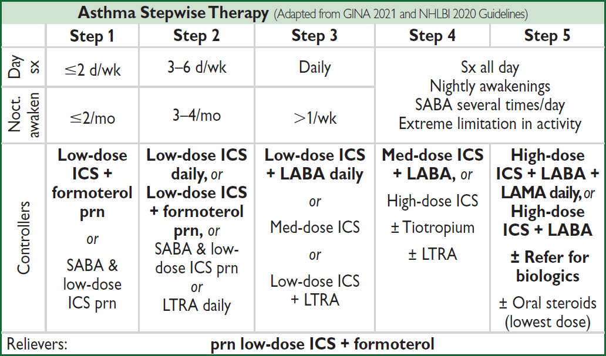
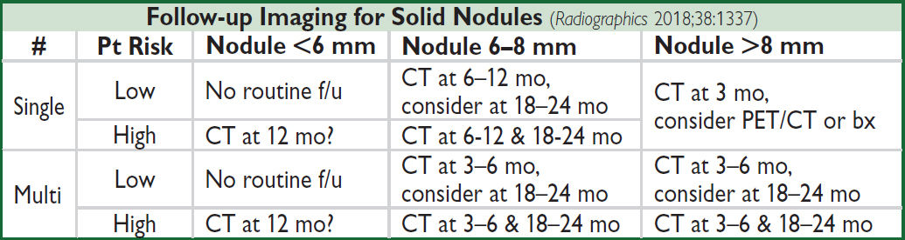
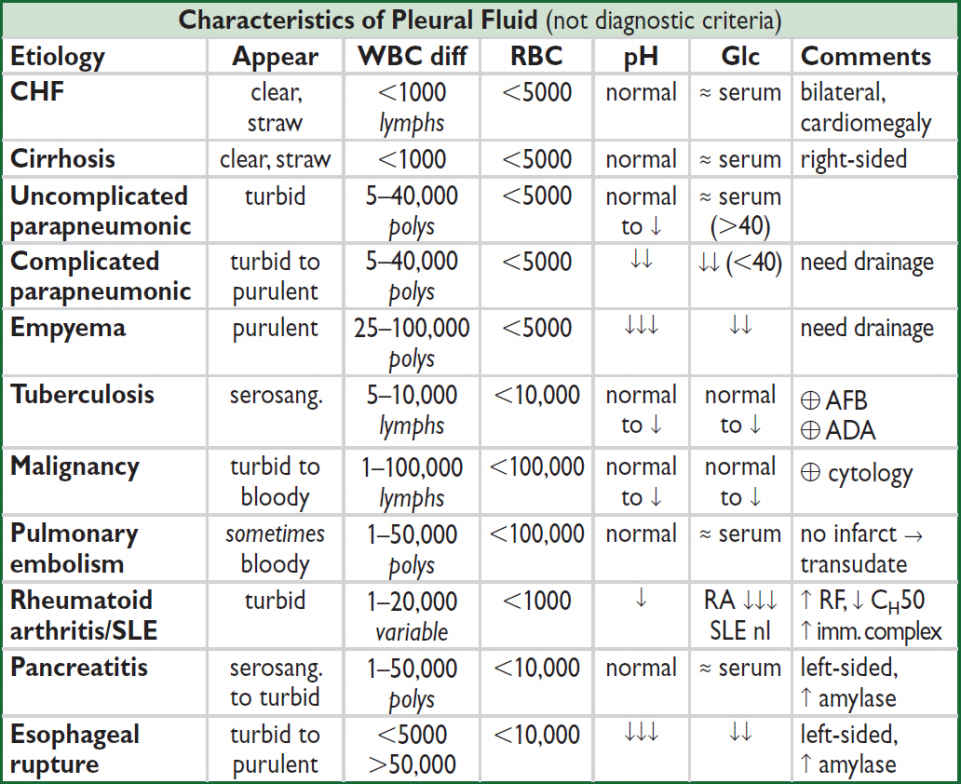
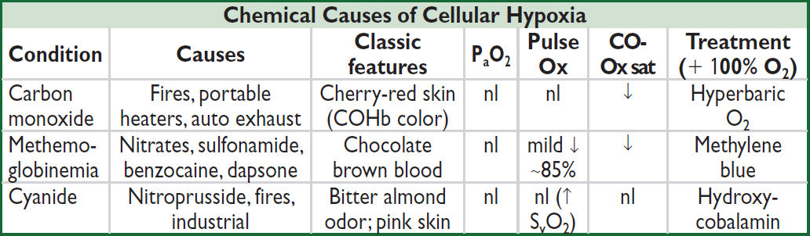

Pathophysiology |
Etiologies |
Airway obstruction (↑ resistance to airflow) |
Asthma, COPD, bronchiectasis, cystic fibrosis, tumor, foreign body, vocal cord dysfunction, anaphylaxis |
Alveolar / Parenchymal disease |
Pulmonary edema: cardiogenic or noncardiogenic ILD; pneumonia; atelectasis |
Vascular (V/Q mismatch) |
Large vessel: PE, tumor emboli Small vessel: PHT, vasculitis, ILD, emphysema, PNA |
Chest wall (↑ resistance to expansion; weakness of respir. muscles) |
Pleural disease: large effusion, fibrosis, pneumothorax Chest wall/diaphragm: kyphoscoliosis, ↑ abd girth Neuromuscular disorders (ALS, GBS, MG) Hyperinflation (COPD, asthma) |
Stimulation of receptors |
Chemoreceptors: hypoxemia, metabolic acidosis Mechanoreceptors: ILD, pulmonary edema, PHT, PE |
↓ O2 carrying cap. (but nl PaO2) |
Anemia, methemoglobinemia, CO poisoning |
Psychological |
Anxiety, panic attack, depression, somatization |
Evaluation
• History: quality of sensation, tempo, positional dependence, exac./allev. factors, exertion
• Cardiopulmonary exam, SaO2, CXR (see Appendix & Radiology inserts), ECG, ABG, U/S Predictors of CHF: h/o CHF, PND, S3, CXR w/ venous congestion, AF (JAMA 2005;294:1944) Dyspnea w/ nl CXR: CAD, asthma, PE, PHT, early ILD, anemia, acidosis, NM disease
• Based on results of initial evaluation: PFT, chest CT, TTE, cardiopulmonary testing
• BNP & NT-proBNP ↑ in CHF (also ↑ in AF, RV strain from PE, COPD flare, PHT, ARDS) BNP <100 pg/mL to r/o CHF (90% Se), >400 to r/i (NEJM 2002;347:161) NT-proBNP <300 pg/mL to r/o CHF (99% Se); age-related cut points to r/i: >450 pg/mL (<50 y), >900 (50–75 y), >1800 (>75 y) (EHJ 2006;27:330)
↑ in chronic HF, ∴ need to compare to known “dry BNP.” May be falsely low in obesity.
• Spirometry: evaluate for obstructive disease
Flow-volume loops: diagnose and/or localize obstruction
Bronchodilator: indicated if obstruction at baseline or asthma clinically suspected
Methacholine challenge: helps dx asthma if spirometry nl, >20% ↓ FEV1 → asthma
• Lung volumes: evaluate for hyperinflation or restrictive disease including NM causes
• DLCO: evaluates functional surface area for gas exchange; helps differentiate causes of obstructive and restrictive diseases and screens for vascular disease & early ILD
Definition and epidemiology (Lancet 2018;391:783)
• Chronic inflam disorder w/ airway hyperresponsiveness + variable airflow obstruction
• Affects 5–10% population; ~85% of cases by age 40 y
Clinical manifestations (NEJM 2013;369:549)
• Classic triad = wheezing, cough, dyspnea; others include chest tightness, sputum; symptoms typically chronic with episodic exacerbation
• Precipitants (triggers)
respiratory irritants (smoke, perfume, etc.) & allergens (pets, dust mites, pollen, etc.)
infections (URI, bronchitis, sinusitis)
drugs (eg, ASA & NSAIDs via leukotrienes, βB via bronchospasm, MSO4 via histamine)
emotional stress, cold air, exercise (increase in ventilation dries out airways)
Physical examination
• Wheezing and prolonged expiratory phase
• Presence of nasal polyps, rhinitis, rash → allergic component
• Exacerbation → ↑ RR, ↑ HR, accessory muscle use, diaphoresis, pulsus paradoxus
Diagnostic studies (JAMA 2017;318:279)
• Spirometry: ↓ FEV1, ↓ FEV1/FVC, coved flow-volume loop; lung volumes: ± ↑ RV & TLC
⊕ bronchodilator response (↑ FEV1 ≥12% & ≥200 mL) strongly suggestive of asthma
methacholine challenge (↓ FEV1 ≥20%) if PFTs nl: Se >90%
• Allergy suspected → consider checking serum IgE, eos, skin testing/RAST
Ddx (“all that wheezes is not asthma…”)
• Hyperventilation & panic attacks
• Upper airway obstruction or inh foreign body; laryngeal/vocal cord dysfxn (eg, 2° to GERD)
• CHF (“cardiac asthma”); COPD; bronchiectasis; ILD (including sarcoidosis); vasculitis; PE
“Asthma plus” syndromes
• Atopy = asthma + allergic rhinitis + atopic dermatitis
• Aspirin-exacerbated respiratory disease (Samter’s syndrome) = asthma + ASA sensitivity + nasal polyps (J Allergy Clin Immunol 2015;135:676)
• ABPA = asthma + pulmonary infiltrates + hypersensitivity to Aspergillus (Chest 2009;135:805)
Dx: ↑ IgE to Asperg. & total (>1000), ↑ Asperg. IgG levels, ↑ eos, central bronchiectasis
Rx: steroids ± itra-/voriconazole for refractory cases (NEJM 2000;342:756)
• Eosinophilic granulomatosis w/ polyangiitis (EGPA, previously Churg-Strauss) = asthma + eosinophilia + granulomatous vasculitis
CHRONIC MANAGEMENT
“Reliever” medications (used prn to quickly relieve sx)
• Low-dose inhaled corticosteroids (ICS) + long-acting inh β2-agonists (LABA): budesonide-formoterol (NEJM 2019;380:2020)
• Short-acting inh β2-agonists (SABA): albuterol Rx of choice
• Short-acting inh anticholinergics (ipratropium) ↑ β2-agonist delivery → ↑ bronchodilation
“Controller” meds (taken daily to keep control) (JAMA 2020;324:2301)
• ICS Rx of choice. Superior to LAMA if sputum w/ ≥2% eos (NEJM 2019;380:2009). PO steroids may be needed for severely uncontrolled asthma; avoid if possible b/c of systemic side effects.
• LABA (eg, salmeterol, formoterol) safe & ↓ exacerb. when added to ICS (NEJM 2018;378:2497)
• Long-acting inh antimuscarinics (LAMA; eg, tiotropium, umeclidinium): may consider if sx despite ICS+LABA (JAMA 2018;319:1473)
• Leukotriene receptor antagonists (LTRA): some Pts very responsive, esp. ASA-sens and exercise-induced. Warning for serious neuropsychiatric effects, including suicide.
• Nedocromil/cromolyn: limited use in adults. Useful in young Pts, exercise-induced bronchospasm; ineffective unless used before trigger or exercise exposure.
Immunotherapies (NEJM 2017;377:965)
• Allergen ImmunoRx (“allergy shots”) may help if sig. allerg. component (JAMA 2016;315:1715)
• Anti-IgE (omalizumab) for uncontrolled mod-to-severe allergic asthma (w/ IgE >30) on ICS ± LABA (JAMA 2017; 318:279); ↓ exacerbations in severe asthma (Cochrane 2014;CD003559)
• Anti-IL5 (mepolizumab, reslizumab) ↓ exacerb in severe asthma (NEJM 2014;371:1189 & 1198)
• Anti-IL5Rα (benralizumab) ↓ steroid use, ↓ exac. in sev asthma w/ eos (NEJM 2017;376:2448)
• Anti-IL4Rα (dupilumab) blocks IL-4 & IL-13; ↓ exacerb in severe asthma, ↓ steroid use, ↑ FEV1 (NEJM 2018;378:2475 & 2486)
• Anti-TSLP (tezepelumab-ekko) ↓ exacerbations in severe asthma; can use in non-allergic/non-eosinophilic asthma (NEJM 2021;384:1800)
• Education and avoidance of environmental triggers (Lancet 2015;386:1075); yearly flu shot
• Use quick-relief rescue medication as needed for all Pts
• Goal to achieve complete control = daily sx ≤2/wk, Ø nocturnal sx or limitation of activity, reliever med ≤2/wk, nl peak expiratory flow rate or FEV1; partly controlled = 1–2 of the above present in a wk; uncontrolled = ≥3 of the above present in a wk
• Step up treatment as needed to gain control, step down as tolerated
• Can abort exacerb by quadrupling ICS if deteriorating control (NEJM 2018;378:902)

Category for sx determined by most severe day or nocturnal element
EXACERBATION
Evaluation
• History: baseline PEF, steroid requirement, ED visits, hospital admissions, prior intubation
Current exacerbation: duration, severity, potential precipitants, meds used
Risk factors for life-threatening: prior intubation, h/o near-fatal asthma, ED visit/hosp for asthma w/in 1 y, current/recent PO steroids, not using ICS, overdependent on SABA, Ψ, h/o noncompliance
• Physical exam: VS, pulm, accessory muscle use, pulsus paradoxus, abdominal paradox
Assess for barotrauma: asymmetric breath sounds, tracheal deviation, subcutaneous air → pneumothorax, precordial (Hamman’s) crunch → pneumomediastinum
• Diagnostic studies: peak expiratory flow (know personal best; <80% personal best c/w poor control, <50% c/w severe exacerbation); SaO2; CXR to r/o PNA or PTX; ABG if severe (low PaCO2 initially; nl or high PaCO2 may signify tiring)
Severity of Asthma Exacerbation |
|||
|
Mild-Moderate |
Severe |
Life-Threatening |
Symptoms |
Talks in phrases |
Talks in words, tripod positioning |
Drowsy Confused |
Vitals/ Exam |
RR >20, HR 100–120, Room air SaO2 90–95% |
RR >30, HR >120 Room air SaO2 <90% |
Silent chest Bradycardia |
PEF |
>50% predicted or best |
≤50% predicted or best |
Not indicated |
Initial Treatment |
O2, SABA 4–10 puffs q20min, prednisone |
Tx to acute facility, SABA, ipratropium, methylpred, IV Mg |
Tx to acute facility, prepare for intubation SABA, ipratropium, methylpred, IV Mg |
Initial treatment details (GINA 2021 Guidelines)
• Oxygen to keep SaO2 ≥93–95%
• Inhaled SABA (eg, albuterol) by MDI (4–8 puffs) or nebulizer (2.5–5 mg) q20min
• Corticosteroids: prednisone 40–60 mg PO if outPt; methylpred IV if ED or inPt
• Ipratropium MDI (4–6 puffs) or nebulizer (0.5 mg) q20min if severe (Chest 2002;121:1977)
• Reassess after 60–90 min of Rx
Mild–mod exacerbation: cont SABA q1h
Sev exacerbation: SABA & ipratropium q1h or cont.; if refractory, consider Mg ± heliox
• Decide disposition within 4 h of presentation and after 1–3 h of Rx
• High-dose steroids: methylpred 125 mg IV q6h (NEJM 1999;340:1941)
ICU-level care
• Invasive ventilation:
Large ET tube, Pplat <30 cm H2O (predicts barotrauma better than PIP), max exp time
PEEP individualized to patient physiology
Paralysis, inhalational anesthetics, bronchoalveolar lavage w/ mucolytic, heliox (60–80% helium) and ECMO have been used with success
IV ketamine: bronchodilating effects and can be used for refractory status asthmaticus
• NPPV likely improves obstruction (Chest 2003;123:1018), but controversial and rarely used
Definition and pathophysiology (Ann Emerg Med 2006;47:373)
• Severe, rapid onset (mins to hrs), potentially life-threatening systemic allergic response
• IgE-mediated mast cell degranulation with release of histamine, tryptase, and TNF
• Precipitates systemic reactions (bronchospasm, tissue swelling, fluid shifts, vasodilation)
• Common triggers: penicillins, cephalosporins, shellfish, nuts, insect stings, IV contrast (not truly an IgE-mediated mechanism, but clinically similar)
Diagnosis: any of the three following criteria
1) Acute illness with skin ± mucosal involvement (rash, flushing, hives), AND at least one of:
Respiratory compromise (wheeze, stridor, dyspnea, hypoxemia)
Hypotension or hypoperfusion (syncope, incontinence)
2) Two or more of the following after exposure to a likely allergen: skin/mucosal involvement, respiratory compromise, ↓ BP or hypoperfusion, GI symptoms
3) Hypotension after exposure to known allergen for that Pt
Treatment
• Epi: 0.5 mg IM (0.5 mL of 1 mg/mL solution) q5–15min as needed. For those who do not respond, IV infusion starting at 0.1 mcg/kg/min.
• Airway: suppl O2 ± intubation or cricothyroidotomy (if laryngeal edema); β2-agonists
• Fluid resuscitation w/ ≥1–2 L crystalloid (may extravasate up to 35% of intravasc volume)
• Antihistamines relieve hives & itching, no effect on airway or hemodynamics; H1RA (diphenhydramine 50 mg IV/IM)
• Methylprednisolone 1–2 mg/kg/d × 1–2 d for those who do not respond to epi
• Avoid unopposed α-adrenergic vasopressors
Disposition
• Mild rxn limited to urticaria or mild bronchospasm can be observed for ≥6 h; admit all others
• Watch for biphasic reaction; occurs in 23%, typically w/in 8–10 h but up to 72 h
Angioedema (J Allergy Clin Immunol 2013;131:1491)
• Localized swelling of skin/mucosa; involves face, lips, tongue, uvula, larynx, and bowels
• Etiologies: mast cell-mediated (eg, NSAIDs); bradykinin-mediated (eg, ACEI, ARNi, hereditary angioedema, acquired C1 inhibitor deficiency); idiopathic
• Diagnosis: C4 and C1 inhibitor level, tryptase (if suspect anaphylaxis), ESR/CRP
• Rx: intubation if risk of airway compromise. Allergic angioedema: H1/H2 antihist., steroids.
If 2° ACEI: d/c ACEI, antihist., icatibant (bradykinin-receptor antag; NEJM 2015;372:418).
Hereditary angioedema: plasma-derived C1 inhibitor, ecallantide (kallikrein inhibitor)
Definition and epidemiology (Lancet 2017;389:1931)
• Progressive airflow limitation caused by airway and parenchymal inflammation
Emphysema vs. Chronic Bronchitis |
||
|
Emphysema |
Chronic Bronchitis |
Definition |
Dilation/destruction of parenchyma (path definition) |
Productive cough >3 mo/y × ≥2 y (clinical definition) |
Pathophysiology |
Tissue destruction V/Q: ↑ dead space fraction → hypercarbia, but only mild hypoxemia |
Small airways affected V/Q: ↑ shunt fraction → severe hypoxemia, hypercapnia PHT, cor pulmonale |
Clinical manifestations |
Severe, constant dyspnea Mild cough |
Intermittent dyspnea Copious sputum production |
Physical exam |
“Pink puffer” Tachypneic, noncyanotic, thin Diminished breath sounds |
“Blue bloater” Cyanotic, obese, edematous Rhonchi & wheezes |
Pathogenesis (Lancet 2017;389:1931)
• Cigarette smoke (centrilobular emphysema, affects 15–20% of smokers)
• Recurrent airway infections
• α1-antitrypsin deficiency: early-onset panacinar emphysema or signif basilar disease, 1–3% of COPD cases. Suspect if age <45, lower lungs affected, extrathoracic manifestations (liver disease [not if heterozygote MZ], FMD, pancreatitis). ✓ serum A1AT level (nb, acute phase reactant).
• Low FEV1 in early adulthood associated w/ COPD (NEJM 2015;373:111)
Clinical manifestations
• Chronic cough, sputum production, dyspnea; later stages → freq exacerb, AM HA, wt loss
• Exacerbation triggers: infection, other cardiopulmonary disease, including PE
Infxn: overt tracheobronchitis/pneumonia from viruses, S. pneumoniae, H. influenzae, M. catarrhalis or triggered by changes in strain of colonizers (NEJM 2008;359:2355)
• Physical exam: ↑ AP diameter of chest (“barrel chest”), hyperresonance, ↓ diaphragmatic excursion, ↓ breath sounds, ↑ expiratory phase, rhonchi, wheezes during exacerbation: tachypnea, accessory muscle use, pulsus paradoxus, cyanosis
• Asthma-COPD overlap syndrome (ACOS; NEJM 2015;373:1241): features of both present. For example: reversibility of airway obstruction w/ bronchodilator in COPD; neutrophilic inflammation in asthma (more classic in COPD); eos in COPD.
Diagnostic studies (JAMA 2019;321:786)
• CXR (see Radiology inserts): hyperinflation, flat diaphragms, ± interstitial markings & bullae
• PFTs: obstruction: ↓↓ FEV1, ↓ FVC, FEV1/FVC <0.7 (no sig Δ post bronchodilator), expiratory coving of flow-volume loop; hyperinflation: ↑↑ RV, ↑ TLC, ↑ RV/TLC; abnormal gas exchange: ↓ DLCO (in emphysema)
• ABG: ↓ PaO2, ± ↑ PaCO2 (in chronic bronchitis, usually only if FEV1 <1.5 L) and ↓ pH
• Screen symptomatic Pts w/ spirometry; don’t screen if asx; screen for α1-AT deficiency
Chronic treatment (Adapted from GOLD 2021 Report)
COPD Staging and Recommended Therapies by GOLD Criteria |
||
Exacerbations/Yr |
Mild Symptoms |
Mod/Severe Symptoms |
<2 |
A Short-acting inh dilator prn |
B LAMA |
≥2 |
C LAMA |
D LAMA + LABA ± ICS |
Consider adding PDE-4 inhib to bronchodilator |
||
Smoking cessation & vaccinations in all. Pulm rehab in groups B–D. O2 as indicated per SaO2.
• Bronchodilators (1st-line): long-acting muscarinic antag (LAMA), β2-agonists (LABA)
LAMA (eg, tiotropium): ↓ exacerb, slows ↓ FEV1, ↓ admit, ↓ resp failure; better than ipratropium or LABA (NEJM 2008;359:1543; 2011;364:1093; 2017;377:923)
LABA: ~11% ↓ in exacerbations, no ↑ in CV events (Lancet 2016;387:1817)
LAMA + LABA: ↑ FEV1, ↓ sx vs. either alone (Chest 2014;145:981) and superior to LABA + inh steroid (NEJM 2016;374:2222)
• Corticosteroids (inhaled, ICS): ~11% ↓ in exacerbations & slows ↓ FEV1; no Δ in mortality (Lancet 2016;387:1817). Greatest benefit if eos >300 (Lancet Repir Med 2018;6:117).
• “Triple Therapy” (LAMA+LABA+ICS) ↓ exac, ↓ hosp, ↑ PNA (NEJM 2020;383:35)
• Roflumilast (PDE-4 inhib) + bronchodil: ↑ FEV1, ↓ exacerb in Pts with severe COPD, chronic bronchitis, and a hx of exacerbations (Lancet 2015;385:857)
• Anti-IL5 (eg, mepolizumab, benralizumab): mixed data on ↓ exacerb in Pts w/ eos (NEJM 2017;377:1613 & 2019;381:1023)
• Antibiotics: daily azithro ↓ exacerbations, but not routine (JAMA 2014;311:2225)
• Oxygen: if PaO2 ≤55 mmHg or SaO2 ≤89% (during rest, exercise, or sleep) to prevent cor pulmonale; only Rx proven to ↓ mortality (Annals 1980;93:391; Lancet 1981;i:681); no benefit in Pts w/ moderate hypoxemia (SaO2 89–93%) (NEJM 2016;375:1617) or nocturnal O2 alone (NEJM 2020;383:1129); unknown benefit of isolated exertional O2 (AJRCCM 2020;202:121).
• Night NPPV if recent exacerb & PaCO2 >53 ↓ risk of readmit or death (JAMA 2017;317:2177)
• Prevention: Flu/Pneumovax; smoking cessation → 50% ↓ in lung function decline (AJRCCM 2002;166:675) and ↓ long-term mortality (Annals 2005;142:223)
• Rehabilitation: ↓ dyspnea and fatigue, ↑ exercise tolerance, ↑ QoL (NEJM 2009;360:1329)
• Surgery & bronchoscopic interventions
Lung volume reduction surgery: ↑ exercise capacity, ↓ mortality if FEV1 >20%, upper lobe, low exercise capacity (NEJM 2003;348:2059)
Bronchoscopic lung reduction w/ endobronchial valves or coils: ↑ lung fxn but significant complications (PTX, PNA) (NEJM 2015;373:2325; Lancet 2015;386:1066; JAMA 2016;315:175)
• Lung transplant: ↑ QoL and ↓ sx (Lancet 1998;351:24), ? survival benefit (Am J Transplant 2009;9:1640)
Staging and prognosis
• Assess breathlessness, cough, sputum, exercise capacity & energy (tools such as CAT and mMRC may be used as part of assessment)
• Ratio of diam PA/aorta >1 associated with ~3× ↑ risk of exacerbations (NEJM 2012;367:913)
• FEV1 stages: I = ≥80%; II = 50–79% (~11% 3-y mort.); III = 30–49% (~15% 3-y mort.); IV = <30% (~24% 3-y mort.)
EXACERBATION
COPD Exacerbation Treatment |
||
Agent |
Dose |
Comments |
Ipratropium |
MDI 4–8 puffs q1–2h or Nebulizer 0.5 mg q1–2h |
First-line therapy (NEJM 2011;364:1093) |
Albuterol |
MDI 4–8 puffs q1–2h or Nebulizer 2.5–5 mg q1–2h |
Benefit if component of reversible bronchoconstriction |
Corticosteroids |
Prednisone 40 mg/d × 5d (JAMA 2013;309:2223); some Pts will benefit from higher dose/longer course if severe Methylprednisolone 125 mg IV q6h × 72 h for more severe exacerbations |
↓ treatment failure, ↓ hosp. stay ↑ FEV1 but no mortality benefit, ↑ complications (Cochrane 2009:CD001288) OutPt Rx after ED visit ↓ relapse (NEJM 2003;348:2618) |
Antibiotics |
Amox, TMP-SMX, doxy, azithro, antipneumococcal FQ all reasonable (no single abx proven superior). Consider local flora and avoid repeat courses of same abx. ≤5d course likely enough for mild–mod exacerbation (JAMA 2010;303:2035). |
H. flu, M. catarrhalis, S. pneumo ↑ PEF, ↓ Rx failure, ? ↓ short-term mort, ↓ subseq exacerb (Chest 2008;133:756 & 2013;143:82) Consider if CRP >20 + ↑ sputum purulence or CRP >40 (NEJM 2019;381:111) |
Oxygenation |
↑ FiO2 to achieve PaO2 ≥55–60 or SaO2 88–92% |
Watch for CO2 retention (due to ↑ V/Q mismatch, loss of hypoxemic resp drive, Haldane effect), but must maintain acceptable SaO2! |
Noninvasive positive-pressure ventilation |
Initiate early if moderate/severe dyspnea, ↓ pH / ↑ PaCO2, RR >25 Results in 58% ↓ intubation, ↓ LOS by 3.2 d, 59% ↓ mortality Contraindications: Δ MS, inability to cooperate or clear secretions, hemodynamic instability, UGIB (NEJM 1995;333:817; Annals 2003;138:861; Cochrane 2004;CD004104; ERJ 2005;25:348) |
|
Endotracheal intubation |
Consider if PaO2 <55–60, ↑’ing PaCO2, ↓’ing pH, ↑ RR, respiratory fatigue, Δ MS or hemodynamic instability |
|
Other measures |
Mucolytics overall not supported by data (Chest 2001;119:1190) Monitor for cardiac arrhythmias |
|
Post-exacerb care |
Follow up w/in 1 mo; smoking cessation if current smoker; vaccinations (influenza, pneumococcal), referral to pulm rehab (AJRCCM 2007;176:532) |
|
Principles
• Definition: single, well-defined, <3 cm, surrounded by nl lung, no LAN or pleural effusion
• Often “incidentalomas,” esp with ↑ CT use, but may still be early, curable malignancy
Etiologies |
|
Benign (70%) |
Malignant (30%) |
Granuloma (80%): TB, histo, coccidio Hamartoma (10%) Bronchogenic cyst, AVM, pulm infarct Echinococcosis, ascariasis, aspergilloma GPA, rheumatoid nodule, sarcoidosis Lipoma, fibroma, amyloidoma |
Bronchogenic carcinoma (75%) periph: adeno (most common) & large cell central: squamous & small cell Metastatic (20%): sarcoma, melanoma, breast, head & neck, colon, testicular, renal Carcinoid, primary sarcoma |
Initial evaluation
• History: h/o cancer, smoking, age (<30 y = 2% malignant, +15% each decade >30)
• CT: size/shape, Ca2+, LAN, effusions, bony destruction, compare w/ old studies
Ø Ca → ↑ likelihood malignant; laminated → granuloma; “popcorn” → hamartoma
• High-risk features for malig: size (eg, ≥2.3 cm diameter), spiculated, upper lobe, ♀, >60 yo, >1 ppd current smoker, no prior smoking cessation (NEJM 2003;348:2535 & 2013;369:910)
Diagnostic studies
• PET: detects metab. activity of tumors, 97% Se & 78% Sp for malig (esp if >8 mm). Useful for deciding which lesions to bx vs. serial CT & for surgical staging b/c may detect mets.
• Transthoracic needle biopsy (TTNB): if tech feasible, 97% will obtain definitive tissue dx
• Video-assisted thoracoscopic surgery (VATS): for percutaneously inaccessible lesions; highly sensitive and allows resection
• Transbronchial bx (TBB): most lesions too small to sample w/o endobronchial U/S; bronch w/ brushings low-yield unless invading bronchus; navigational bronch 70% yield
• PPD, fungal serologies, ANCA
Management (JAMA 2022;327:264)
• Low risk (<5%): serial CT (freq depending on risk); shared decision w/ Pt re: bx
• High risk (and surgical candidate): TBB, TTNB, or VATS → lobectomy if malignant
• Subsolid nodules: longer f/u (b/c if malignant can be slow-growing) & PET

Definition and pathophysiology
• Expectoration of blood or blood-streaked sputum
• Massive hemoptysis: >100 mL/h or >500 mL in 24 h; massive hemoptysis usually from tortuous or invaded bronchial arteries
Etiologies (Crit Care Med 2000;28:1642) |
|
Infection/Inflammation |
Bronchitis (most common cause of trivial hemoptysis) Bronchiectasis incl CF (common cause of massive hemoptysis) TB or aspergilloma (can be massive); pneumonia or lung abscess |
Neoplasm |
Usually primary lung cancer, sometimes metastasis (can be massive) |
Cardiovasc |
PE (can be massive), pulmonary artery rupture (2° to instrumentation), CHF, mitral stenosis, trauma/foreign body, bronchovascular fistula |
Other |
Vasculitis (GPA, anti-GBM, Behçet’s, SLE), AVM, anticoag (w/underlying lung disease), coagulopathy, cocaine, pulm hemosiderosis |
Diagnostic workup
• Localize bleeding site (r/o GI or ENT source by H&P ± endo); determine whether unilateral or bilateral, localized or diffuse, parenchymal or airway by CXR/chest CT ± bronch
• PT, PTT, CBC to rule out coagulopathy
• Sputum culture/stain for bacteria, fungi and AFB; cytology to r/o malignancy
• ANCA, anti-GBM, ANA, urinalysis to ✓ for vasculitis or pulmonary-renal syndrome
• Death is from asphyxiation not exsanguination; maintain gas exchange, reverse coagulopathy and Rx underlying condition; cough suppressant may ↑ risk of asphyxiation
• Inhaled tranexamic acid promising (Chest 2018;154:1379)
• Massive hemoptysis: put bleeding side dependent; selectively intubate nl lung if needed
Angiography: Dx & Rx (vascular occlusion balloons or selective embol of bronchial art)
Rigid bronch: allows more options (electrocautery, laser) than flexible bronch
Surgical resection
Definition and epidemiology (NEJM 2002;346:1383)
• Obstructive airways disease of bronchi and bronchioles, chronic transmural inflammation w/ airway dilatation and thickening, collapsibility, mucus plugging w/ impaired clearance
Initial workup
• H&P: cough, dyspnea, copious sputum production, ±hemoptysis, inspiratory “squeaks”
• CXR: scattered or focal; rings of bronchial cuffing; “tram track” of dilated, thick airways
• PFTs: obstructive; chest CT: airway dilation & thickening ± cystic Δs, infiltrates, adenopathy
Etiology |
Other Features |
Evaluation |
Chronic infxns (eg, MTb, ABPA) |
Chronic cough, freq/persist infiltrate, refract asthma (ABPA) |
Sputum cx (incl mycobact, fungal), ± bronch/BAL, IgE & eos (ABPA) |
1° ciliary dyskin |
Sinusitis, infertility, otitis |
Dynein mutations |
Immunodefic |
Recurrent infxns often as child |
IgA, IgG, IgM, IgG subclasses |
RA, Sjogren, ANCA |
Resp sx may precede joint sx |
RF, CCP, SS-A, SS-B, ANCA |
IBD |
Not relieved by bowel resection |
Colonoscopy, biopsy |
α1-AT deficiency |
Lower lobe emphysema |
α1-AT level and genotype |
Anatomic |
R middle lobe synd. from sharp takeoff, foreign body aspiration |
Bronchoscopy |
Treatment
• Acute exacerbations: antibiotics directed against prior pathogens; if no prior Cx data → FQ
• Chronic mgmt: treat underlying condition, chest PT, inhaled hypertonic saline, bronchodil.; prophylactic azithro shown to ↓ exacerb in non-CF bronchiectasis (JAMA 2013:1251)
• Airway clearance: guaifenesin, instrumental devices (eg, Aerobika, Acapella), chest PT
Non-tuberculous mycobacterium (NTM; eg, MAC, Mycobacterium kansaii)
• Chronic cough, ↓ wt; Lady Windermere syndrome: R middle lobe and lingula bronchiectasis in elderly ♀ who suppress expectoration
• Dx: CT scan (tree-in-bud, nodules, cavities, bronchiect.), sputum ×3 or BAL, AFB stain + Cx
• Treatment: susceptibility-based Rx pref over empiric Rx w/ [azithro or clarithro] + rifamycin & ethambutol for ≥12 mo (CID 2020;71:e1)
Definition and pathophysiology (NEJM 2015;372:351)
• Autosomal recessive genetic disorder due to mutations in chloride channel (CFTR gene)
• ↑ mucus thickness, ↓ mucociliary clearance, ↑ infections → bronchiectasis
Clinical features
• Recurrent PNA, sinus infections
• Distal intestinal obstruction syndrome (DIOS), pancreatic insufficiency (steatorrhea, malabsorption, failure to thrive, weight loss), CF-related diabetes, infertility
Treatment (Lancet 2021;397:2195)
• Acute exacerbations: may be assoc w/ persistent drop in FEV1 (AJRCCM 2010;182:627); continue aggressive airway clearance, target abx based on sputum cx (incl double coverage for PsA); common pathogens include PsA, S. aureus, non-typeable H. flu, Stenotrophomonas, Burkholderia, NTM
• Chronic mgmt: airway clearance with chest PT, inhaled hypertonic saline, inhaled DNAse (dornase alfa), SABA; oral azithromycin if chronic respiratory symptoms, inhaled tobramycin or aztreonam if persistent PsA infection
• CFTR potentiator (ivacaftor) or corrector (lumacaftor, tezacaftor) depending on mutation; combo (elexacaftor+tezacaftor+ivacaftor) if homozygous for ΔF508 (Lancet 2019;394:1940)
• Lung transplantation; refer to lung transplant center when FEV1 <30% predicted, rapidly declining FEV1, 6MWT <400 m, evidence of PHT, significant clinical decline
WORKUP OF ILD (Thorax 2008;63:v1)
May present as incidental finding, subacute dyspnea, or rapidly progressive hypox. resp fail.
Broad categories
• (1) Sarcoid; (2) Exposures (eg, drugs, XRT, organic & inorganic dusts, vaping);
• (3) Collagen vasc dis (eg, scleroderma, ANCA, myositis, RA); (4) Idiopathic PNAs (qv)
Rule out mimickers of ILD
• Congestive heart failure (✓ BNP, trial of diuresis); infection: viral, atypical bacterial; malignancy: lymphangitic carcinomatosis, bronchoalveolar, leukemia, lymphoma
History and physical exam
• Occupational, exposures (eg, birds), tobacco, meds, XRT, FHx, precipitating event
• Tempo (acute → infxn, CHF, hypersens pneumonitis, eos PNA, AIP, COP, drug-induced)
• Extrapulm signs/sx (skin Δs, arthralgias, arthritis, myalgias, sicca sx, alopecia, Raynaud’s)
Diagnostic studies (see Appendix & Radiology inserts)
• CXR and high-resolution chest CT
Upper lobe predom: hypersensitivty, coal, silica, smoking-related, sarcoidosis, Langerhan’s
Lower lobe predom: NSIP, UIP, asbestosis
Adenopathy: malignancy, sarcoidosis, berylliosis, silicosis
Pleural disease: collagen-vascular diseases, asbestosis, infections, XRT
• PFTs: ↓ DLCO (early sign), restrictive pattern (↓ volumes), ↓ PaO2 (esp. w/ exercise);
If restrictive + obstructive, consider sarcoid
If combined pulmonary fibrosis and emphysema (CFPE) → near-nl lung vol on PFTs
• Serologies: ✓ ACE, ANA, RF, RNP, ANCA, CCP, SSA/SSB, Scl 70, CK, aldolase, myositis panel
• Bronchoalveolar lavage: in select cases if suspect superimposed infection, hemorrhage, eosinophilic syndromes
• Bx (transbronch w/ or w/o cryo vs. VATS depending on location) if unclear etiology
SPECIFIC ETIOLOGIES OF ILD
Sarcoidosis (AJRCCM 2020;201:e26; JAMA 2022;327:856)
• Prevalence: African Americans, northern Europeans, and females; onset in 3rd-5th decade
• Pathophysiology: depression of cellular immune system peripherally, activation centrally
Clinical Manifestations of Sarcoidosis |
|
Organ System |
Manifestations |
Pulmonary |
Hilar LAN; fibrosis; pulm hypertension. Stages: I = bilat hilar LAN; II = LAN + ILD; III = ILD only; IV = diffuse fibrosis. |
Cutaneous (~15%) |
Waxy skin plaques; lupus pernio (violaceous facial lesions) Erythema nodosum (red tender nodules due to panniculitis, typically on shins). Ddx: idiopathic (34%), infxn (33%, strep, TB), sarcoid (22%), drugs (OCP, PCNs), vasculitis (Behçet’s), IBD, lymphoma. |
Ocular (10–30%) |
Anterior >posterior uveitis; ↑ lacrimal gland |
Endo & renal (10%) |
Nephrolithiasis, hypercalcemia (10%), hypercalciuria (40%) Due to vitamin D hydroxylation by macrophages |
Neuro (10% clin, 25% path) |
CN VII palsy, periph neuropathies, CNS lesions, seizures |
Cardiac (5% clin, 25% path) |
Conduction block, VT, CMP |
Liver, spleen, BM |
Granulomatous hepatitis (25%), splenic & BM gran. (50%) |
Constitutional |
Fever, night sweats, anorexia & wt loss (a/w hepatic path) |
Musculoskeletal |
Arthralgias, periarticular swelling, bone cysts |
• Löfgren’s syndrome: erythema nodosum + hilar adenopathy + arthritis (good prognosis)
• Diagnostic studies: LN bx → noncaseating granulomas + multinucleated giant cells Endobronchial ultrasonography superior to conventional bronch (JAMA 2013;309:2457) 18FDG PET can be used to identify extent and potentially targets for dx bx ↑ ACE (Se 60%, 90% w/ active dis., Sp 80%, false ⊕ in granulomatous diseases)
• To assess extent: CXR, PFTs, full ophtho exam, ECG, CBC (lymphopenia, ↑ eos), Ca, LFTs; ± Holter, echo, cardiac MRI, brain MRI, etc., based on s/s
• Rx: steroids if sx or extrathoracic organ dysfxn (eg, prednisone 20–40 mg/d), improves sx, but doesn’t Δ long-term course; hydroxychloroquine for extensive skin disease; MTX, AZA, mycophenolate, or anti-TNF for chronic/refractory disease
• Prognosis: ~²∕³ spontaneously remit w/in 10 y (60–80% of stage I, 50–60% stage II, 30% stage III), w/ relapses uncommon; ~1∕³ have progressive disease
• Drugs/Iatrogenic
Amiodarone: interstitial pneumonitis ↔ org. PNA ↔ ARDS; Rx: d/c amio; steroids
Other drugs: nitrofurantoin, sulfonamides, inh, hydralazine
Chemo: bleomycin, busulfan, cyclophosphamide, MTX, immunotherapy, XRT
• Pneumoconioses (inorganic dusts) (NEJM 2000;342:406; Clin Chest Med 2004;25:467)
Coal worker’s: upper lobe coal macules; may progress to massive fibrosis
Silicosis: upper lobe opacities ± eggshell calcification of lymph nodes; ↑ risk of TB
Asbestosis: lower lobe fibrosis, calcified pleural plaques, DOE, dry cough, rales on exam. Asbestos exposure → pleural plaques, benign pleural effusion, diffuse pleural thickening, rounded atelectasis, mesothelioma, lung Ca (esp. in smokers)
Berylliosis: multisystemic granulomatous disease that mimics sarcoidosis
• Hypersensitivity pneumonitides (organic dusts): loose, noncaseating granulomas
Antigens: farmer’s lung (spores of thermophilic actinomyces); bird fancier’s lung (proteins from feathers and excreta of birds or down); humidifier lung (thermophilic bacteria)
Collagen vascular diseases (Chest 2013;143:814)
• Rheumatologic disease
Scleroderma: ILD in ~50%; PHT seen in ~10% of Pts with limited disease
PM-DM: ILD & skin/muscle findings; MCTD: PHT & fibrosis; Sjogren’s: ILD & sicca sx
SLE & RA: pleuritis and pleural effusions more often than ILD; SLE can cause DAH
• Vasculitis (can p/w DAH)
Granulomatosis w/ polyangiitis (GPA): ⊕ c-ANCA w/ necrotizing granulomas
Eosinophilic GPA (EGPA): ⊕ c- or p-ANCA w/ eosinophilia & necrotizing granulomas
Microscopic polyangiitis: ⊕ p-ANCA w/o granulomas
• Goodpasture’s syndrome = DAH + RPGN; typically in smokers; ⊕ anti-GBM in 90%
• Lymphangioleiomyomatosis (LAM): cystic, ↑ in ♀, Rx w/ sirolimus (NEJM 2011;364:1595)
Idiopathic interstitial pneumonias (IIPs) (AJRCCM 2013;188:733)
• Definition: ILD of unknown cause; dx by radiographic, histologic, and clinical features
IIPs |
||
Type |
Imaging/Histology |
Clinical |
IPF |
UIP imaging pattern: reticular opacities, honeycombing, traction bronchiectasis; peripheral, subpleural, & basal |
Sx >12 mo 5-y mort ~80% |
NSIP |
Homogenous ground-glass opacities or consolid., reticular irreg lines; subpleural sparing; symmetric, peripheral, basal. Cellular & fibrotic subtypes. |
Sx mos–y 5-y mort 10% |
COP |
Patchy, migratory consolidations; subpleural & peribronchial. Excessive proliferation of granulation tissue in small airways and alveolar ducts. |
Post-infxn, XRT, rxn to drug. 5-y mort <5% |
AIP |
Diffuse ground-glass opacities, consolidations w/ lobular sparing. Path/imaging similar to DAD (diffuse, bilateral, central>periph ground glass or consolidative opacities). |
Sx <3 wk 6-mo mort 60% |
DIP |
Diffuse ground-glass opacities, reticular lines; lower zones. Peripheral macrophage in alveoli. |
30–50 yo smokers Sx wks–mos Death rare |
RB-ILD |
Bronchial thickening, centrilobular nodules, patchy ground-glass opacities; upper lobe predom. Mφ in alveoli. |
|
UIP, usual interstitial PNA (IP); IPF, idiopathic pulm fibrosis; NSIP, nonspecific IP; COP, cryptogenic organizing PNA; AIP, acute IP (Hamman-Rich syndrome); DIP, desquamative IP; RB-ILD, resp bronchiolitis-assoc ILD.
• Rx for IPF: suppl O2, pulm rehab, Rx for GERD, PHT screening, lung tx referral;
pirfenidone (antifibrotic) or nintedanib (tyrosine kinase inhib mediating fibrogenic growth factors) ↓ rate of FVC decline (Lancet 2021;398:1450)
high-dose steroids may be used for acute exacerbations, but no RCT data
• Steroids for other IIPs: NSIP (esp. cellular type) and COP (AJRCCM 2000;162:571); ? benefit for AIP and DIP/RB-ILD (for which Pts should stop smoking)
Pulmonary infiltrates w/ eosinophilia (PIE) = eos on BAL é peripheral blood
• Allergic bronchopulmonary aspergillosis (ABPA)
• EGPA
• Löffler’s syndrome: parasites/drugs → transient pulm infilt + cough, fever, dyspnea, eos
• Acute eosinophilic PNA (AEP): acute hypox febrile illness; Rx: steroids, tobacco cessation
• Chronic eosinophilic pneumonia (CEP): “photonegative” of CHF, typically in women
Miscellaneous
• Pulm alveolar proteinosis (PAP): accumulation of surfactant-like phospholipids; white & gummy sputum; BAL milky fluid (NEJM 2003;349:2527); Rx w/ lung lavage & GMCSF
• Langerhans cell granulomatosis (LCG): young ♂ smokers; apical cysts; PTX (25%)
Pathophysiology
• Systemic factors (eg, ↑ PCWP, ↓ oncotic pressure) → transudative effusion
• Local factors (ie, Δ pleural surface permeability) → exudative effusion
Transudates
• Congestive heart failure (40%): 80% bilateral, ± cardiomegaly on CXR occasionally exudative (especially after aggressive diuresis or if chronic)
• Constrictive pericarditis (knock on exam, calcification or thickening on imaging)
• Cirrhosis (“hepatic hydrothorax”): diaphragmatic pores allow passage of ascitic fluid often right-sided (²∕³) & massive (even w/o marked ascites)
• Nephrotic syndrome: usually small, bilateral, asymptomatic (r/o PE b/c hypercoag)
• Other: PE (usually exudate), malignancy (lymphatic obstruction), myxedema, CAPD
Exudates
• Lung parenchymal infection (25%)
Bacterial (parapneumonic): can evolve along spectrum of exudative (but sterile) → fibropurulent (infected fluid) → organization (fibrosis & formation of rigid pleural peel). Common causes: Strep pneumo, Staph aureus, Strep milleri, Klebsiella, Pseudomonas, Haemophilus, Bacteroides, Peptostreptococcus, mixed flora in aspiration pneumonia.
Mycobacterial: >50% lymphs 80% of the time, ADA >40, pleural bx ~70% Se
Fungal, viral (usually small), parasitic (eg, amebiasis, echinococcosis, paragonimiasis)
• Malignancy (15%): primary lung cancer most common, metastases (esp. breast, lymphoma, etc.), mesothelioma (✓ serum osteopontin levels; NEJM 2005;353:15)
• Pulmonary embolism (10%): effusions in ~40% of PEs; exudate (75%) >transudate (25%); hemorrhagic—must have high suspicion b/c presentation highly variable
• Collagen vascular disease: RA (large), SLE (small), GPA, EGPA
• Abdominal diseases: pancreatitis, cholecystitis, esophageal rupture, abdominal abscess
• Hemothorax (Hcteff/Hctblood >50%): trauma, PE, malignancy, coagulopathy, leaking aortic aneurysm, aortic dissection, pulmonary vascular malformation
• Chylothorax (triglycerides >110): thoracic duct damage due to trauma, malignancy, LAM
• Other:
Post-CABG: left-sided; initially bloody, clears after several wks
Dressler’s syndrome (pericarditis & pleuritis post-MI), uremia, post-radiation therapy
Asbestos exposure: benign; ⊕ eosinophils
Drug-induced (eg, nitrofurantoin, methysergide, bromocriptine, amiodarone): ⊕ eos
Uremia; post-XRT; sarcoidosis
Meigs’ syndrome: benign ovarian tumor → ascites & pleural effusion
Yellow-nail syndrome: yellow nails, lymphedema, pleural effusion, bronchiectasis
Diagnostic studies (NEJM 2018;378:740)
• Thoracentesis (ideally U/S guided) (NEJM 2006;355:e16)
Indications: all effusions >1 cm in decubitus view
if suspect due to CHF, can diurese and see if effusions resolve (75% do so in 48 h); asymmetry, fever, chest pain or failure to resolve → thoracentesis
parapneumonic effusions should be tapped ASAP (cannot exclude infxn clinically)
Diagnostic studies: ✓ total protein, LDH, glucose, cell count w/ differential, Gram stain & culture, pH; remaining fluid for additional studies as dictated by clinical scenario
Complications: PTX (5–10%), hemothorax (~1%), re-expansion pulm edema (if >1.5 L removed), spleen/liver lac.; post-tap CXR not routinely needed (Annals 1996;124:816)
↓ PTX w/ U/S and experienced supervisor; even with INR ~1.9, on DOAC, or on clopi, risk of bleed low w/ U/S & experienced operator (Mayo 2019;94:1535)
• Transudate vs. exudate (JAMA 2014;311:2422)
Light’s criteria: exudate = TPeff/TPserum >0.5 or LDHeff/LDHserum >0.6 or LDHeff >²∕³ ULN of LDHserum; 97% Se, 85% Sp; best Se of all methods; however, will misidentify 25% of transudates as exudates; ∴ if clinically suspect transudate but meets criterion for exudate, confirm w/ test w/ higher Sp
Exudative criteria w/ better Sp: choleff >55 mg/dL (95–99% Sp); choleff >45 mg/dL and LDHeff >200 (98% Sp); choleff/cholserum >0.3 (94% Sp); serum-effusion alb gradient ≤1.2 (92% Sp); serum-effusion TP gradient ≤3.1 (91% Sp)
CHF effusions: TP may ↑ with diuresis or chronicity → “pseudoexudate”; alb gradient ≤1.2, choleff >60 mg/dL (Se 54%, Sp 92%) or clin judgment to distinguish (Chest 2002;122:1524)
• Complicated vs. uncomplicated parapneumonic (Chest 1995;108:299)
complicated = ⊕ Gram stain or culture or pH <7.2 or glucose <60
complicated parapneumonic effusions usually require tube thoracostomy for resolution
empyema = frank pus, also needs tube thoracostomy (J Thorac CV Surg 2017;153:e129)
• Additional pleural fluid studies (NEJM 2002;346:1971)
NT-proBNP ≥1500 pg/mL has 91% Se & 93% Sp for CHF (Am J Med 2004;116:417)
WBC & diff.: exudates tend to have ↑ WBC vs. transudates but nonspecific neutrophils → parapneumonic, PE, pancreatitis lymphocytes (>50%) → cancer, TB, rheumatologic eos (>10%) → blood, air, drug rxn, asbestos, paragonimiasis, Churg-Strauss, PE
RBC: Hcteff 1–20% → cancer, PE, trauma; Hcteff/Hctblood >50% → hemothorax
AFB: yield in TB 0–10% w/ stain, 11–50% w/ culture, ~70% w/ pleural bx
adenosine deaminase (ADA): seen w/ granulomas, >70 suggests TB, <40 excludes TB
cytology: ideally ≥150 mL and at least 60 mL should be obtained (Chest 2010;137:68)
glucose: <60 mg/dL → malignancy, infection, RA
amylase: seen in pancreatic disease and esophageal rupture (salivary amylase)
rheumatoid factor, CH50, ANA: limited utility in dx collagen vascular disease
triglycerides: >110 → chylothorax, 50–110 → ✓ lipoprotein analysis for chylomicrons
cholesterol: >60; seen in chronic effusions (eg, CHF, RA, old TB)
creatinine: effusion/serum ratio >1 → urinothorax
fibulin-3: ↑ plasma and/or effusion levels → mesothelioma (NEJM 2012;367:1417)
• Chest CT; pleural biopsy; VATS
• Undiagnosed persistent pleural effusions (Clin Chest Med 2006;27:309)
Transudative: most commonly CHF or hepatic hydrothorax. ✓ s/s CHF or cirrhosis, NT-proBNPeff; consider intraperitoneal injection of technetium-99m sulfur colloid
Exudative (ensure using Sp test listed above): most commonly malig, empyema, TB, PE. ✓ s/s malig, chest CT (I+), ADA or IFN-γ release assay; consider thoracoscopy.

Treatment
• Symptomatic effusion: therapeutic thoracentesis, treat underlying disease process
• Parapneumonic effusion (Chest 2000;118:1158)
uncomplicated → antibiotics for pneumonia
>½ hemithorax or complicated or empyema → tube thoracostomy (otherwise risk of organization and subsequent need for surgical decortication)
loculated→ tube thoracostomy or VATS; intrapleural t-PA + DNase ↓ need for surgery
• Malignant effusion: serial thoracenteses vs. tube thoracostomy + pleurodesis (success rate ~80–90%) vs. indwelling pleural catheter, which ↓ hosp days but ↑ adverse events (JAMA 2017;318:1903); systemic steroids & pH <7.2 a/w ↑ pleurodesis failure rate
• TB effusions: effusion will often resolve spontaneously; however, treat Pt for active TB
• Hepatic hydrothorax
Rx: Δ pressure gradient (ie, ↓ ascitic fluid volume, NIPPV)
avoid chest tubes; prn thoracenteses, pleurodesis, TIPS or VATS closure of diaphragmatic defects if medical Rx fails; NIPPV for acute short-term management
spontaneous bacterial empyema (SBEM) can occur (even w/o SBP being present), ∴ thoracentesis if suspect infection
transplant is definitive treatment and workup should begin immediately
Definitions
• Superficial thrombophlebitis: pain, tenderness, erythema along superficial vein
• Deep venous thrombosis (DVT): Proximal = thrombosis of iliac, femoral, or popliteal veins (nb, “superficial” femoral vein part of deep venous system). Distal = calf veins below knee; lower risk of PE/death than proximal (Thromb Haem 2009;102:493).
• Pulmonary embolism (PE): thrombosis originating in venous system and embolizing to pulmonary arterial circulation; 1 case/1000 person y; 250,000/y (Archives 2003;163:1711)
Risk factors
• Virchow’s triad for thrombogenesis. Stasis: bed rest, inactivity, CHF, CVA w/in 3 mo, air travel >6 h. Injury to endothelium: trauma, surgery, prior DVT, inflam, central catheter.
Thrombophilia: genetic disorders (qv), HIT, OCP, HRT, tamoxifen, raloxifene.
• Malignancy (12% of “idiopathic” DVT/PE; Circ 2013;128:2614)
• History of thrombosis (greater risk of recurrent VTE than genetic thrombophilia)
• Obesity, smoking, acute infection, postpartum (JAMA 1997;277:642; Circ 2012;125:2092)
Thromboprophylaxis (Blood Adv 2018;2:3198) |
|
Patient & Situation |
Prophylaxis |
Low-risk med; same-day surg & <40 y |
Early, aggressive ambulation ± mechanical |
Moderate-risk (hosp., ≥1 risk factor) or high-risk medical (hosp., ICU, cancer, stroke) |
LMWH or UFH (if renal failure) or fonda (if HIT ⊕). Pharmacologic favored vs. mechanical, but may personalize based on bleeding & thrombotic risk. |
Low-risk surgery (minor surgery) |
Mechanical Ppx |
Moderate-risk surgery (eg, major surgery, trauma, immobilization) |
If low bleeding risk: LMWH or UFH SC If high bleeding risk: mech Ppx |
High-risk nonorthopedic surgery (multiple risk factors), stroke or ICH |
[LMWH or UFH SC] + mech. Stroke s/p lytic or ICH: mech 24 h or until bleed stable, then + pharm. |
Ortho surgery (cont pharmacoRx up to 35 d [hip] or 10–14 d [knee]) |
LMWH or DOAC (or fonda, UFH, or warfarin [INR 2–3]) + mech Ppx. |
UFH: 5000 U SC bid or tid. Enox: 30 mg bid for highest risk or 40 mg qd for moderate risk or spinal/epidural anesthesia. For riva 10 mg/d, apixa 2.5 mg/d, edox 30 mg/d, dabi 110 mg post-op and then 220 mg/d.
• Calf pain, swelling (>3 cm c/w unaffected side), venous distention, erythema, warmth, tenderness, palpable cord, ⊕ Homan’s sign (calf pain on dorsiflexion, seen in <5%)
• 50% of Pts with sx DVT have asx PE
• Popliteal (Baker’s) cyst: may lead to DVT due to compression of popliteal vein
“Simplified Wells” Pretest Probability Scoring of DVT (JAMA 2006;295:199) |
||
+1 point each for: active cancer (Rx ongoing or w/in 6 mo or palliative); paralysis, paresis, or recent immobilization of lower extremities; recently bedridden for ≥3 d or major surgery w/in 12 wk; localized tenderness along distribution of deep venous system; entire leg swelling; calf ≥3 cm larger than asx calf (at 10 cm below tibial tuberosity); pitting edema confined to sx leg; collateral superficial veins (nonvaricose); previous DVT –2 points if alternative dx at least as likely as DVT |
||
Pretest Probability Assessment (useful if outPt, less so if inPt; JAMA IM 2015;175:1112) |
||
Score ≤0 |
Score 1 or 2 |
Score ≥3 |
Low probability (5%) |
Moderate probability (17%) |
High probability (53%) |
• For UE DVT, +1 point each for venous cath, local pain, & unilateral edema, –1 if alternative dx. ≤1 = unlikely; ≥2 = likely. U/S if likely or if unlikely but abnl D-dimer (Annals 2014;160:451)
Diagnostic studies—DVT
• D-dimer: <500 helps r/o; ? use 1000 as threshold if low risk (Annals 2013;158:93)
• Compression U/S >95% Se & Sp for sx DVT (lower if asx); survey whole leg if ≥ mod prob
Clinical manifestations—PE
• Dyspnea (~50%), pleuritic chest pain (~40%), cough (~23%), hemoptysis (~8%)
• ↑ RR (>70%), crackles (51%), ↑ HR (30%), fever, cyanosis, pleural friction rub, loud P2
• Massive: syncope, HoTN, PEA; ↑ JVP, R-sided S3, Graham Steell (PR) murmur
Modified Wells Pretest Probability Scoring for PE (Annals 2011;154:709) |
|
• Prior PE or DVT=1.5 points • Active cancer =1.0 • Immobilization (bed rest ≥3 d) or surgery w/in 4 wk=1.5 • Alternative dx less likely than PE=3 |
• Clinical signs of DVT=3 • HR >100 bpm=1.5 • Hemoptysis=1.0 |
Simplified Wells Probability Assessment |
|
≤4 = ”Unlikely” (13% probability) |
>4 “Likely” (39% probability) |
Diagnostic studies—PE (EHJ 2014;35:3033)
• CXR (limited Se & Sp): 12% nl, atelectasis, effusion, ↑ hemidiaphragm, Hampton hump (wedge-shaped density abutting pleura); Westermark sign (avascularity distal to PE)
• ECG (limited Se & Sp): sinus tachycardia, AF; signs of RV strain → RAD, P pulmonale, RBBB, SIQIIITIII & TWI V1–V4 (McGinn-White pattern; Chest 1997;111:537)
• ABG: hypoxemia, hypocapnia, respiratory alkalosis, ↑ A-a gradient (Chest 1996;109:78) 18% w/ room air PaO2 85–105 mmHg, 6% w/ nl A-a gradient (Chest 1991;100:598)
• D-dimer: high Se, poor Sp (~25%); ELISA has >99% NPV ∴ use to r/o PE if “unlikely” pretest prob (JAMA 2006;295:172); cut-off 500 if <50 y, 10× age if ≥ 50 y (JAMA 2014;311:1117)
• Echocardiography: useful for risk stratification (RV dysfxn), but not dx (Se <50%)
• V/Q scan: high Se (~98%), low Sp (~10%). Sp improves to 97% for high-prob VQ. Use if pretest prob of PE high and CT not available or contraindicated. Can also exclude PE if low pretest prob, low-prob VQ, but 4% false (JAMA 1990;263:2753).
• CT angiography (CTA; see Radiology inserts; JAMA 2015;314:74): Se ~90% & Sp ~95%; PPV & NPV >95% if imaging concordant w/ clinical suspicion, ≤80% if discordant (∴ need to consider both); ~1/4 of single & subseg may be false ⊕; CT may also provide other dx
• Lower extremity compression U/S shows DVT in ~9%, sparing CTA
Workup for idiopathic VTE (NEJM 2015;373:697)
• Thrombophilia workup: ✓ if ⊕ FH; may be helpful but consider timing as thrombus, heparin and warfarin Δ results. Useful for relatives, if dx APLAS (given requires warfarin), or if not planning lifelong anticoagulation for Pt.
• Malignancy workup: 12% Pts w/ “idiopathic” DVT/PE will have malignancy; age-appropriate screening adequate; avoid extensive w/u
Risk stratification for Pts with PE
• Clinical: Simplified PE Severity Index (sPESI) risk factors include age >80 y; h/o cancer; h/o cardiopulm. disease; HR ≥110; SBP <100; SaO2 <90%
• Imaging: TTE for RV dysfxn; CTA for RV/LV dimension ratio >0.9. Biomarker: Tn & BNP.
• Classification (EHJ 2020;41:543)
High risk (“massive”): hemodyn unstable w/ arrest, obstructive shock, or persistent HoTN
Intermediate risk (“submassive”): sPESI ≥1
“Intermediate-high” if both RV dysfunction & elevated Tn
“Intermediate-low” if either or neither RV dysfunction or elevated Tn
Low risk: clinically stable, sPESI = 0, normal RV function, normal Tn
Whom to treat (JAMA 2020;324:1765; Chest 2021;160:e545)
• Superficial venous thrombosis: elevate extremity, warm compresses, compression stockings, NSAIDs for sx. Anticoag if high risk for DVT (eg, ≥5 cm, proximity to deep vein ≤5 cm, other risk factors) for 4 wk as ~10% have VTE w/in 3 mo (Annals 2010;152:218).
• LE DVT: proximal → anticoag; distal → anticoag if severe sx, o/w consider serial imaging over 2 wk and anticoag if extends (although if bleeding risk low, many would anticoag).
• UE DVT: anticoagulate (same guidelines as LE; NEJM 2011;364:861). If catheter-associated, need not remove if catheter functional and ongoing need for catheter.
• PE: anticoagulate (unless isolated subsegmental and risk for recurrent VTE low)
Initial anticoagulation options (EHJ 2020;41:543; Chest 2021;160:e545)
• Initiate immediately if high or intermed suspicion but dx test results will take ≥4 h
• Either (a) initial parenteral → long-term oral or (b) solely DOAC if no interven. planned
• LMWH (eg, enoxaparin 1 mg/kg SC bid or dalteparin 200 IU/kg SC qd)
Preferred over UFH (especially in cancer) except: renal failure (CrCl <25), ? extreme obesity, hemodynamic instability or bleed risk (Cochrane 2004;CD001100)
• IV UFH: 80 U/kg bolus → 18 U/kg/h → titrate to PTT 1.5–2.3 × cntl (eg, 60–85 sec); preferred option when contemplating thrombolysis or catheter-based Rx (qv)
• IV direct thrombin inhibitors (eg, argatroban, bivalirudin) used in HIT ⊕ Pts
• Fondaparinux: 5–10 mg SC qd (NEJM 2003;349:1695); use if HIT ⊕; avoid if renal failure
• Direct oral anticoag (DOAC; NEJM 2010;363:2499; 2012;366:1287; 2013;369:799 & 1406)
Preferred b/c as good/better than warfarin in preventing recurrent VTE w/ less bleeding
Apixaban (10 mg bid × 7 d → 5 bid) or rivaroxaban (15 mg bid for 1st 3 wk → 20 mg/d) can be given as sole anticoagulant w/ initial loading dose
Edoxaban or dabigatran can be initiated after ≥5 d of parenteral anticoag
• DVT & low-risk PE w/o comorbidities and able to comply with Rx can be treated as outPt
• Generally safe to anticoagulate if platelets >50,000 but contraindicated if <20,000
Systemic thrombolysis (EHJ 2020;41:543; Chest 2021;160:e545)
• Typically TPA 100 mg over 2 h or wt-adjusted TNK bolus; risk of ICH ~2-5%, ↑ w/ age
• Consider if low bleed risk w/ acute PE + HoTN or cardiopulm deterioration after anticoag
• High-risk PE: ↓ death & recurrent PE each by ~50% (JAMA 2014;311:2414; EHJ 2015;36:605)
• Intermediate-risk PE: ↓ hemodyn decompensation, ↑ ICH & major bleeding, ↓ mortality in short- but not long-term; ? consider if <75 y and/or low bleed risk (JAMA 2014;311:2414)
• Half-dose lytic (50 mg or 0.5 mg/kg if <50 kg; 10-mg bolus → remainder over 2 h) in ~intermed. PE: ↓ pulm HTN & ? PE or death w/ ≈ bleeding vs. heparin alone (AJC 2013;111:273)
• DVT: consider if (a) acute (<14 d) & extensive (eg, iliofemoral), (b) severe sx swelling or ischemia, and (c) low bleed risk
Mechanical intervention (JACC 2020;76:2117)
• Catheter-directed pharmacomech: low-dose lytic infused (eg, tPA 1 mg/h for 12–24 hr per catheter) + U/S or mech fragmentation of clot. Consider if hemodyn. compromise or high risk & not candidate for systemic lysis or surgical thrombectomy. Preferred to systemic lytic by some centers. Also consider if intermediate-high risk and evidence of early hemodynamic deterioration (Circ 2014;129:479). Lack of data on hard outcomes.
• Catheter-based clot extraction (eg, AngioVac or FlowTriever): ↓ PA pressure
• Surgical embolectomy: if large, proximal PE + hemodynamic compromise + contraindic. to lysis; consider in experienced ctr if large prox. PE + RV dysfxn
• IVC filter: use if anticoag contraindic.; no benefit to adding to anticoag (JAMA 2015;313:1627)
Complications: migration, acute DVT, ↑ risk of recurrent DVT & IVC obstruction (5–18%)
Duration of full-intensity anticoagulation
• Superficial venous thrombosis: 4 wk
• 1st prox DVT or PE 2° reversible/time-limited risk factor or distal DVT: 3–6 mo
• 1st unprovoked prox DVT/PE: ≥3 mo, then reassess; benefit to prolonged Rx. Consider clot, bleed risk, Pt preference, and intensity of Rx when crafting strategy.
• 2nd VTE event or cancer: indefinite (or until cancer cured) (NEJM 2003;348:1425)
Long-term anticoagulation options
• For nonpregnant Pt without severe renal dysfunction or active cancer → DOAC
• For severe renal insufficiency or APLAS → warfarin. Start w/ parenteral anticoag unless ? need for lytic, catheter-based Rx or surg; bridge to INR ≥2 × ≥24 h.
• Pregnancy or unable to take oral therapy → LMWH or fondaparinux
• Cancer → DOAC (but in Pts w/ UGI cancers, more GI bleeding w/ riva) or LMWH
Extended DOAC strategies
• After ≥6 mo of anticoag, following regimens compared w/ no extended Rx (or ASA):
• Full-dose DOAC: 80–90% ↓ recurrent VTE, 2–5× bleeding, but no signif excess in major bleeding (NEJM 2010;363:2499; 2013;368:699 & 709)
• ½ dose apixa or riva: ≥75% ↓ recur. VTE, w/o ↑ bleeding (NEJM 2013;368:699 & 2017;376:1211)
Complications & prognosis
• Postthrombotic syndrome (23–60%): pain, edema, venous ulcers
• Recurrent VTE: 1%/y (after 1st VTE) to 5%/y (after recurrent VTE)
• Chronic thromboembolic PHT after acute PE ~2–3%, consider thromboendarterectomy
• Mortality: ~10% for DVT and ~10–15% for PE at 3–6 mo (Circ 2008;117:1711)
PHT defined as PA mean pressure ≥20 mmHg at rest (ERJ 2019;53:1801913)
PA mean = CO × PVR + PA wedge pressure. Trans pulm gradient = PA mean – PA wedge.
Etiologies (Revised WHO Classification) (JACC 2013;62:D34) |
|
Primary pulmonary arterial HTN (PAH) (group 1) Precapillary PHT PCWP ≤15 mmHg ↑ transpulm grad ↑ PVR |
• Idiopathic (IPAH): yearly incidence 1–2 per million; mean age of onset 36 y (♂ older than ♀); ♂: ♀ = ~2:1, usually mild ↑ in PAP • Familial (FPAH) • Associated conditions (APAH) • Connective tissue dis.: CREST, SLE, MCTD, RA, PM, Sjögren • Congenital L→R shunts: ASD, VSD, PDA • Portopulmonary HTN (? 2° vasoactive substances not filtered in ESLD; ≠ hepatopulmonary syndrome) • HIV; drugs & toxins: anorexic agents, SSRIs, l-tryptophan • Pulmonary veno-occlusive disease: ? 2° chemo, BMT; orthopnea, pl eff, CHF, nl PCWP; art vasodil. worsen CHF (AJRCCM 2000;162:1964) • Pulmonary capillary hemangiomatosis |
Left heart disease (group 2). ↑ PCWP |
• Left atrial or ventricular (diastolic or systolic) dysfunction • Left-sided valvular heart disease (eg, MS/MR) |
Lung diseases and/ or chronic hypoxemia (group 3) |
• COPD • Alveolar hypoventilation (eg, NM disease) • ILD • Chronic hypoxemia (eg, high altitude) • Sleep apnea • Developmental abnormalities |
Chronic thrombo- embolic dis (group 4) |
• Prox or distal PEs; ~½ w/o clinical h/o PE (NEJM 2011;364:351) • Nonthrombotic emboli (tumor, foreign body, parasites) |
Miscellaneous/ Multifactorial (group 5) |
• Sarcoidosis, histiocytosis X, LAM, schistosomiasis, ESRD • Compression of pulm vessels (adenopathy, tumor, fibrosing mediastinitis, histoplasmosis, XRT) • Other: thyroid dis., glycogen storage dis., Gaucher dis, HHT, sickle cell, etc., chronic myeloprolif d/o, splenectomy |
Clinical manifestations
• Dyspnea, exertional syncope (hypoxia, ↓ CO), exertional chest pain (RV ischemia)
• Symptoms of R-sided CHF (eg, peripheral edema, RUQ fullness, abdominal distention)
• WHO class: I = asx w/ ordinary activity; II= sx w/ ord. activ; III = sx w/ min activ.; IV = sx at rest
Physical exam
• PHT: prominent P2, R-sided S4, RV heave, PA tap & flow murmur, PR (Graham Steell), TR
• ± RV failure: ↑ JVP, hepatomegaly, peripheral edema
Diagnostic studies & workup (JAMA 2022;327:1379)
• High-res chest CT: dilat. & pruning of pulm arteries, ↑ RA & RV; r/o parenchymal lung dis.
• ECG: RAD, RBBB, RAE (“P pulmonale”), RVH (Se 55%, Sp 70%)
• PFTs: disproportionate ↓ DLCO, mild restrictive pattern; r/o obstructive & restrictive lung dis.
• ABG & polysomnography: ↓ PaO2 and SaO2 (espec w/ exertion), ↓ PaCO2, ↑ A-a gradient; r/o hypoventilation and OSA
• TTE: ↑ RVSP (but estimate over/under by ≥10 mmHg in ½ of PHT Pts; Chest 2011;139:988) ↑ RA, RV, & PA; ↑ pressure → interventricular septum systolic flattening (“D” shape) ↓ RV systolic fxn (TAPSE <1.6 cm); TR, PR; r/o LV dysfxn, MV, AoV, congenital disease
• RHC: ↑ RA, RV, & PA pressures; ✓ L-sided pressures and for shunt
if PAH: nl PCWP, ↑ transpulmonary gradient (mean PAP-PCWP >12–15), ↑ diastolic pulmonary gradient (PA diastolic – PCWP >7), ↑ PVR, ± ↓ CO
if 2° to L-heart disease: PCWP (or LVEDP) >15; if PVR nl → “passive PHT”; PVR >240 suggests mixed picture: if ↓ PCWP → ↓ PVR, then “reactive” PHT; if no Δ, then “fixed”
• CTA (large/med vessel), V/Q scan (small vessel to r/o CTEPH), ± pulm angio if ↑ concern
• Labs: ANA (~40% ⊕ in PAH), anti-Scl-70, anti-RNP; LFTs; HIV
• 6-min walk test (6MWT) or cardiopulmonary exercise testing to establish fxnl capacity
Treatment (JAMA 2022;327:1379)
• Principles: 1) prevent & reverse vasoactive substance imbalance and vascular remodeling 2) prevent RV failure: ↓ wall stress (↓ PVR, PAP, RV diam); ensure adeq systemic DBP
• Supportive
Oxygen: maintain SaO2 >90–92% (reduces vasoconstriction)
Diuretics: ↓ RV wall stress and relieve RHF sx; gentle b/c RV is preload dependent
Anticoag: not routinely used; ↓ VTE risk of RHF; ? prevention of in situ microthrombi; ? mortality benefit even if in NSR, no RCTs (Chest 2006;130:545)
Supervised exercise training; aggressive apnea/hypoventilatory Rx w/ CPAP/BiPAP
• Vasodilators (ideally right heart catheterization prior to initiation; NEJM 2004;351:1425) acute vasoreactivity test: use inh NO, adenosine or prostacyclin to identify Pts likely to have long-term response to CCB (⊕ response = ↓ PAP ≥10 mmHg to <40 mmHg w/ ↑ or stable CO); ~10% Pts acute responders; no response → still candidate for other vasodilators
Vasoactive Agents |
Comments (data primarily in Group 1) |
PDE-5 inhibitor sildenafil, tadalafil, vardenafil |
↑ cGMP → vasodilatation, ↓ smooth muscle proliferation, ↓ sx, ↑ 6MWT, no data on clinical outcomes. Often 1st line b/c minimal side-effect profile: HA, vision Δ’s, sinus congestion. |
Endothelin receptor antagonists (ERAs) bosentan, ambrisentan, macitentan |
↓ Smooth muscle remodeling, vasodilatation, ↓ fibrosis, ↓ sx, ↑ 6MWT, ↓ worsening PAH or need for prostanoids w/ trend for ↓ PAH mortality (w/ macitentan). Side effects: ↑ LFTs, HA, anemia, edema, teratogen (NEJM 2013;369:809). |
IV prostacyclin epoprostenol (Flolan) |
Vasodilatation, ↓ plt agg, ↓ smooth muscle prolif; benefits ↑ w/ time (? vasc remodeling). ↑ 6MWT, ↑ QoL, ↓ mortality. Side effects: HA, flushing, jaw pain, abd cramps, N/V, diarrhea, catheter infxn. |
Prostacyclin analogs [iloprost (inh), treprostinil (IV, inh, SC)] |
Same mech as prostacyclin IV, but easier admin, ↓ side effects, w/o risk of catheter infxn. ↓ sx, ↑ 6MWT. Inh Rx w/ improved V/Q matching. Inh trepostinil ↑ 6MWT in ILD-PH (NEJM 2021;384:325). |
Prostacyclin receptor agonist (selexipag, PO) |
Indicated for WHO Group I to delay disease progression and risk of hospitalization. Add in WHO FC II & III (NEJM 2015;373:2522). |
Soluble guanylate cyclase stimulator riociguat |
NO-independent ↑ cGMP → vasodilatation, ↓ smooth muscle -proliferation, ↓ sx, ↑ 6MWT in PAH; ↓ sx, ↓ PVR, ↑ 6MWT in CTEPH (NEJM 2013;369:319 & 330) |
Oral CCB nifedipine, diltiazem |
Consider if ⊕ acute vasoreactive response. Not 1st line b/c side effects: HoTN, lower limb edema. |
• Upfront combination Rx (PDE-5 inhibitor + ERA vs. monotherapy): ↓ sx, ↓ NT-proBNP, ↑ 6MWT, ↓ hospitalizations (NEJM 2015;373:834)
• Treat underlying causes of 2° PHT; can use vasodilators, although little evidence
• CTEPH: riociguat. Pulm endarterectomy potentially curative (AJRCCM 2011;183:1605) vs. balloon pulmonary angioplasty in non-operative Pts (Circ Outcomes 2017;10:e004029).
• Refractory PHT: balloon atrial septostomy: R→L shunt causes ↑ CO, ↓ SaO2, net ↑ tissue O2 delivery; lung txp (single or bilateral; heart-lung needed if Eisenmenger physiology)
• PHT risk stratification based on CHF symptoms, syncope, WHO functional class, 6MWT, CPET, NTproBNP, imaging, hemodynamics (Eur Heart J 2016;37:67)
Management of ICU patient
• Avoid tachyarrhythmias & overly aggressive volume resuscitation
• Caution w/ vasodilators if any L-sided dysfunction
• Intubation can cause hemodynamic collapse
• Dobutamine and inhaled NO or prostacyclin
• Consider R-sided mechanical support (Circ 2015;132:536)
• Consider fibrinolysis if acute, refractory decompensation (eg, TPA 100 mg over 2 h)
Prognosis
• Median survival after dx ~2.8 y; PAH (all etiologies): 2-y 66%, 5-y 48% (Chest 2004;126:78–S)
• Poor prognostic factors: clinical evidence of RV failure, rapidly progressive sx, WHO (modified NYHA) class IV, 6MWT <300 m, peak VO2 <10.4 mL/kg/min, ↑ RA or RV or RV dysfxn, RA >20 or CI <2.0, ↑ BNP (Chest 2006;129:1313)
• A-a gradient = PAO2 – PaO2: normal (on room air) = “4 + age/4” or “2.5 + (0.2 × age)”
• Hypoxemia + nl A-a gradient: problem is ↓ PiO2/FiO2 or ↑ PaCO2 (ie, hypoventilation)
• Hypoxemia + ↑ A-a gradient: problem is either
R → L shunt, anatomic (congenital heart dis) or severe pathophys (alveoli filled w/ fluid; eg, PNA, pulm edema); cannot overcome w/ 100% O2 b/c of sigmoidal Hb-O2 curve
V/Q mismatch where “shunt-like” areas (↓ V & nl Q) cause unoxygenated blood to mix with oxygenated blood; can be overcome w/ ↑ O2 delivery
Diffusion limitation: generally seen with exercise/↑CO
• Cyanosis: when >5 g/dL of deoxygenated Hb in vessels of skin/mucous membranes. Central: ↓ SaO2 (pulm disease, shunt); abnl Hb [metHb, sulfHb, COHb (not true cyanosis)] Peripheral: ↓ blood flow → ↑ O2 extraction (eg, ↓ CO, cold, arterial or venous obstruction)

CO binds to Hb more avidly than does O2. Pulse oximeter (Ox) misreads COHb as HbO2 → falsely nl sat.
Oxidizing drugs Δ Hb (ferrous) to MetHb (ferric), which cannot carry O2. Pulse ox misreads MetHb as HbO2.
Etiologies of High ↑ PaCO2 |
|||
“Won’t Breathe” |
“Can’t Breathe” |
||
↓ RR |
↓ VT |
↑ VD and/or ↓ VT |
|
Respiratory Drive |
NM System |
CW/Pleura |
Lung/Airways |
Voluntary hypervent. Nl PImax & A-a grad |
↓ PImax ↓ PEmax |
Abnl PEx Abnl CT |
Abnl PFTs ↓ End tidal CO2 |
Metabolic alkalosis 1° neurologic: brain-stem stroke, tumor, 1° alveolar hypovent 2° neurologic: sedatives, CNS infxn, hypothyroidism |
Neuropathies: cervical spine, phrenic nerve, GBS, ALS, polio NMJ: MG, LE Myopathies: diaphragm PM/DM, ↓ PO4, musc dystrophies |
Chest wall: obesity, kyphosis, scoliosis Pleura: fibrosis effusion |
Lung parenchyma: emphysema, ILD/fibrosis, CHF, PNA Airways: asthma, COPD, OSA, CF bronchiectasis |
↑ VCO2 typically transient cause of ↑ PaCO2; Ddx: exercise, fever, hyperthyroidism, ↑ work of breathing, ↑ carbs.
Indications
• Improve gas exchange: ↑ oxygenation, ↑ alveolar vent and/or reverse acute resp acidosis
• Relieve respiratory distress: ↓ work of breathing (can account for up to 50% of total O2 consumption), ↓ respiratory muscle fatigue
• Apnea, airway protection, pulmonary toilet
SUPPORTIVE STRATEGIES PRIOR TO INTUB. OR AFTER EXTUB.
Oxygen Delivery Systems (Lancet 2016;387:1867) |
||
System or Device |
O2 Flowa |
FiO2 Range & Comments |
Low-flow nasal cannula |
1–6 |
24–40%, 1L adds ~3% FiO2 |
Standard face mask |
5–10 |
35–50%, minimum 5 L/min |
Partial rebreather mask |
>10 |
40–70% |
Nonrebreather mask |
>10 |
60–80% (not 100% b/c air leaks) |
Air-entrainment mask (Venturi or Venti mask) |
10–15b |
24–50%, FiO2 stays constant |
High-flow nasal cannula (HFNC) (NEJM 2015;372: 2185; JAMA 2015;313:2331 & 2016;315:1354) |
≤40 |
21–100%. In nonhypercapnic acute hypoxemic resp failure, ± ↓ intub. (espec if PaO2/FiO2 ≤200) & ↓ 90-d mort vs. stnd O2 or NPPV. Routine use after extub. ↓ need for reintub |
aL/min. bTotal airflow >60L/min. (Adapted from Marino P. The ICU Book, 4th ed, Philadelphia: LWW, 2014:431)
Noninvasive Positive Pressure Ventilation (NPPV) (NEJM 2015;372:e30) |
|
Indications (Lancet 2009;374:250) |
Clinical: mod–severe dyspnea, RR >24–30, signs of ↑ work of breathing, accessory muscle use, abd paradox Gas exchange: PaCO2 >45 mmHg (& significantly worse than -baseline), hypoxemia, PaO2/FiO2 <200 |
Contraindications (Crit Care Med 2007;35:2402) |
Claustrophobia, poor mask fit, ΔMS, vomiting, cannot protect airway, extrapulm organ failure, HD instab, sev UGIB, ↑ secretions |
Continuous positive airway pressure (CPAP) |
≈ PEEP. Pt breathes spont. at own rate while vent maintains constant positive airway pressure throughout respiratory cycle. No limit on O2 delivered (ie, can give hi-flow → FiO2 ≈1.0) Used if primary problem hypoxemia (eg, CHF) |
Bilevel positive airway pressure (BiPAP) |
≈ PSV + PEEP. Able to set both inspiratory (usually 8–10 cm H2O) and expiratory pressures (usually <5 cm H2O). Used if primary problem hypoventilation; FiO2 delivery limited |
Mask ventilation (? helmet better; JAMA 2016;315:2435) |
Tight-fitting mask connecting patient to a standard ventilator Can receive PS ~20–30 cm H2O, PEEP ~10 cm H2O, FiO2 ~1.0 Used for short-term support (<24 h) for a reversible process |
Conditions w/ strong evidence |
Cardiogenic pulmonary edema: may ↓ intub. ± mortality (JAMA 2005;294:3124; Lancet 2006;367:1155; NEJM 2008;359:142) COPD exac. w/ ↑ PaCO2: ↓ intub. & mort., but if pH <7.3 → intubate Acute hypoxemic resp failure: ↓ intub. & mortality (JAMA 2020;324:57) High-risk extub. (age >65, CHF, APACHE II >12): NPPV × 24 h directly after extub. → ↓ reintub. and, if PaCO2 >45 mmHg during SBT, ↓ mortality. Does not Δ total # vent days (JAMA 2018;320:1881). Hypoxemic resp failure after abdominal surgery: ↓ reintubation Immunosupp. w/ infiltrates: ↓ complications & mortality |
VENTILATOR MANAGEMENT
Ventilator Modes and Principles (NEJM 2001;344:1986; Chest 2015;148:340) |
|
Cont mandatory ventilation (CMV), aka Assist control (AC) |
Vent delivers a minimum number of supported breaths Additional Pt-initiated breaths trigger fully assisted vent breaths ∴ Vent-triggered breaths identical to Pt-triggered breaths Tachypnea → ? resp. alkalosis, breath-stacking, & auto-PEEP May be pressure targeted or volume targeted (qv) |
Pressure support vent (PSV) |
Support Pt-initiated breaths w/ a set inspiratory pressure & PEEP A mode of partial vent support because no set rate |
Other |
Synch intermittent mand. vent: deliver min # supported breaths; VT of additional Pt-initiated breaths determined by Pt’s effort Proportional assist ventilation (PAV): delivers variable pressure to achieve targeted % of work of breathing |
Variables on the Ventilator |
|
FiO2 |
Fraction of inspired air that is oxygen |
VT (tidal vol) |
Volume of breath delivered; lung-protective ventilation: goal ≤6 mL/kg IBW If no ARDS, similar # of vent days at higher VT (JAMA 2018;320:1872) |
f (resp. rate) |
Rate set by ventilator, f may be lower than RR if Pt triggering breaths. Adjust to achieve desired PaCO2. |
Positive end- expiratory pressure (PEEP) |
Positive pressure applied during exhalation via resistor in exhalation port Benefits: prevents alveolar collapse, ↓ shunt, ↑ O2 via alveolar recruitment and improved compliance, allows severely obstructed Pt to initiate breath Cardiac effects: ↓ preload by ↑ intrathoracic pressure → ↓ venous return; ↓ afterload by ↓ cardiac transmural pressure; may ↑ or ↓ CO and may ↑ or ↓ oxygen delivery based on the above Auto-PEEP or intrinsic PEEP (iPEEP): inadeq. exhalation time → lungs unable to completely empty before next breath (ie, “breath stacking”); if flow at end-expiration, there must be pressure = auto-PEEP. Will ↓ preload and may ↓ CO, espec if hypovolemic Will ↑ work of breathing as must be overcome by Pt to trigger breaths; can prevent Pt from triggering ventilator, extrinsic PEEP helps Can be detected if end-expiratory flow ≠ 0 before next breath Can measure by occluding expiratory port of vent at end-expiration Can ↓ by: ↑ exp time, ↓ RR, ↓ VT, Rx bronchospasm and secretions If iPEEP >set PEEP, minimize iPEEP, then set PEEP to ~80% of iPEEP to ↓ ineffective triggering |
Inspiratory time |
Normally I:E ratio is ~1:2; however, can alter I time (and consequently flow rate, see later); use in pressure-control mode |
Inspiratory flow rates |
↑ flow rate → ↓ I time → ↑ E time → ∴ may improve ventilation in obstructive disease, but may affect resp rate and bronchodilation/constriction |
Peak inspiratory pressure (PIP) |
Dynamic measurement during inspiration; set in pressure-targeted mode Determined by airway resistance and lung/chest wall compliance ↑ PIP w/o ↑ Pplat → ↑ airway resist (eg, bronchospasm, plugging) ↓ PIP → ↓ airway resistance or air leak in the system |
Plateau pressure (Pplat) |
Static measurement at the end of inspiration when there is no flow Determined by resp system compliance (resist. not a factor since no flow) ↑ Pplat → ↓ lung or chest wall compliance (eg, PTX, pulmonary edema, pneumonia, atelectasis), ↑ PEEP or auto-PEEP Pplat <30 cm H2O ↓ barotrauma (↓ VT, ↓ PEEP or ↑ compl [eg, by diuresis]) |
Tailoring the ventilator settings
• To improve oxygenation: options include ↑ FiO2, ↑ PEEP
SaO2 88–92% acceptable (AJRCCM 2016;193:43), do not exceed 96% (BMJ 2018;363:k4169)
First, ↑ FiO2. If >0.6 and oxygenation remains suboptimal, then try ↑ PEEP:
If ↑ PaO2/FiO2 and Pplat stable, suggests recruitable lung (ie, atelectasis). If PEEP 20 & FiO2 1.0 and oxygenation remains suboptimal, consider rescue/expt strategies (see “ARDS”).
If ↑ PEEP yields no Δ or ↓ PaO2/FiO2 or ↑ PaCO2, suggests additional lung not recruitable and instead overdistending lung → ↑ shunt & dead space; ∴ ↓ PEEP
If no ARDS, PEEP ≤5 (& SaO2 >92%) noninferior to PEEP 8 (JAMA 2020;324:2509)
• To improve ventilation: ↑ VT or inspiratory pressure, ↑ RR (may need to ↓ I time). Nb, tolerate ↑ PaCO2 (permissive hypercapnia) in ALI/ARDS (qv) as long as pH >7.2.
Acute ventilatory deterioration (usually ↑ PIP)
• Response to ↑ PIP: disconnect Pt from vent, bag, auscultate, suction, ✓ CXR & ABG
(Adapted from Marino PL. The ICU Book, 4th ed., Philadelphia: LWW, 2014)
Liberating from the ventilator (NEJM 2012;367:2233; Lancet 2016;387:1856)
• Perform daily assessment of readiness for spontaneous breathing trial (SBT)
• Clinical screening criteria: VS stable, minimal secretions, adequate cough, cause of respiratory failure or previously failed SBT reversed
• Vent parameters: PaO2/FiO2 >200, PEEP ≤5, f/VT <105, VE <12 L/min, VC >10 mL/kg; rapid shallow breathing index (f/VT) >105 predicts failure, NPV 0.95 (NEJM 1991;324:1445)
• Daily awakening trial (d/c all sedation; Lancet 2008;371:126): open eyes & w/o: agitation, RR >35, SaO2 <88%, resp distress or arrhythmias (if fail, restart sedation at ½ prior dose)
• SBT = CPAP × 30 min superior to T-piece × 120 min (JAMA 2019;321:2175) failure if: deteriorating ABGs, ↑ RR, ↑ or ↓ HR, ↑ or ↓ BP, diaphoresis, anxiety
• Tolerate SBT → extubation. Fail SBT → ? cause → work to correct → retry SBT qd
• If high-risk, extubate to either NPPV or NPPV alternating w/ HFNC (JAMA 2019;322:1465)
• ? acetazolamide in Pts w/ COPD & metabolic alkalosis (JAMA 2016;315:480)
Complications
• Oxygen toxicity (theoretical); proportional to duration + degree of ↑ oxygen (FiO2 >0.6)
• Ventilator-induced lung injury (see “ARDS”)
• Ventilator-associated pneumonia (~1%/d, mortality rate ~30%)
typical pathogens: MRSA, Pseudomonas, Acinetobacter and Enterobacter species
preventive strategies (AJRCCM 2005;171:388): wash hands, HOB elevated, non-nasal intub., enteral nutrition rather than TPN?, routine suction of subglottic secretions, avoid unnecessary abx & transfusions; routine oral antiseptic controversial
• Stress ulcers/GIB: prophylaxis w/ PPI ↓ GIB, but no ∆ in overall course (NEJM 2018;379:2199)
• Laryngeal
edema: for Pts vent >36 h; ? predicted by ⊕ cuff leak test. Methylprednisolone 20 mg IV q4h starting 12 h pre-extub. → ↓↓ edema and 50% ↓ in reintubation (Lancet 2007;369:1003).
ulceration: consider tracheostomy for Pts in whom expect >14 d of mech vent → ↓ duration mech vent, ↓ # ICU days (BMJ 2005;330:1243); no benefit to performing at ~1 wk vs. waiting until ~2 wk (JAMA 2010;303:1483)
• Malnutrition (for all critically ill Pts): enteral nutrition initiated early is safe but not necessary (JAMA 2012;307:795), but bolus may ↑ risk of VAP & C diff. (JPEN 2002;26:174); no clear benefit to ✓ing gastric residuals (JAMA 2013;309:249); permissive enteral underfeeding (~½ of calculated caloric req) & standard enteral feeding w/ similar outcomes (NEJM 2015;372:2398); parenteral nutrition should be delayed until after day 8 to ↓ risk of infections, cholestasis, RRT, ventilator days (NEJM 2011;365:506)
• Oversedation/delirium: BDZs and polypharmacy are risk factors
propofol: HoTN in ~25%; propofol infusion syndrome (PRIS) ? espec w/ high (>5 mg/kg/h) & prolonged (>48 h) infusions & concom vasopressors → ↑ AG, cardiac dysfxn, rhabdomyolysis, ↑ triglycerides, & renal failure (Crit Care 2009;13:R169)
dexmedetomidine: no benefit on vent-free days (JAMA 2016;315:1460 & 2017;317:1321); similar outcomes to propofol when utilized as sole agent (NEJM 2021;384:1424)
Berlin definition (JAMA 2012;307:2526)
• Acute onset within 1 week of clinical insult or worsening respiratory status
• Bilateral infiltrates without alternative explanation (eg, effusion, atelectasis, nodules)
• Edema not fully explained by fluid overload or congestive heart failure
• Hypoxemia: PaO2/FiO2 determined with 5 cm H2O of PEEP
PaO2/FiO2 200–300 = mild ARDS (may be on NPPV), 100–200 = mod, <100 = severe
Pathophysiology (Lancet 2016;388:2416)
• ↑ intrapulmonary shunt → hypoxemia (∴ Rx w/ PEEP to prevent derecruitment)
• ↑ increased dead space fraction (see Appendix), predicts ↑ mort (NEJM 2002;346:1281)
• ↓ compliance: VT/(Pplat – PEEP) <50 mL/cm H2O
Pathology
• Diffuse alveolar damage (DAD) seen in 40% of autopsies (AJRCCM 2013;187:761)
• If no clear inciting event and ILD considered as alt dx, consider bx (Chest 2015;148:1073)
Etiologies |
|
Direct Injury |
Indirect Injury |
|
• Pneumonia (~40%) • Aspiration (~15%) • Near drowning • Inhalation injury • Lung contusion |
•Sepsis (~25%) •Shock •DIC •Pancreatitis •Trauma/multiple fractures •Transfusion (TRALI) |
Treatment (Lancet 2021;398:622)
• Goal is to maintain gas exchange, sustain life, & avoid ventilator-induced lung injury (VILI)
• In Pts on O2 for COVID-19 PNA, dexamethasone ↓ 28-day mortality (NEJM 2021;384:693)
Mechanisms of VILI |
Ventilator Strategies (see ARDSnet.org) |
Barotrauma/volutrauma: alveolar dist → mech damage |
VT ≤6 mL/kg, Pplat ≤30 cm H2O, tolerate ↑ PaCO2 (but keep pH >7.2), ↓ mortality (NEJM 2000;342:1301) |
Biotrauma → SIRS |
Low VT, open lung strategy w/ high PEEP |
Atelectrauma: repetitive alveoli recruit & decruit |
Titrate PEEP to prevent tidal alveolar collapse See below for options |
Hyperoxia: ? injury; worsened V/Q matching |
↑ PEEP rather than FiO2 (keep <0.60) O2-induced injury only theoretical in humans |
The 6 Ps
• PEEP (see below)
• Proning: if PaO2/FiO2 <150, prone positioning ≥16 h ↓ mort ~50% (NEJM 2013;368:2159)
• Paralysis: no benefit routinely (NEJM 2019;380:1997); consider if Pt-vent dyssynchrony
• Peeing (fluid balance): target CVP 4–6 cm H2O (if nonoliguric & normotensive) → ↑ vent/ICU-free days, but no Δ mortality (NEJM 2006;354:2564); PA catheter unproven (NEJM 2006;354:2213); consider BNP >200 to trigger diuresis (UOP goal 4.5–9 mL/kg/h × 3 h)
• Pulm vasodilators: inhaled NO or prostacyclins ↑ PaO2/FiO2; no ↓ mort or vent-free days (BMJ 2007;334:779)
• Perfusion (V-V ECMO): may be useful if refractory (NEJM 2018;378:1965)
PEEP titration methods (best method unclear)
• No benefit at given VT if titrated to PaO2 alone (NEJM 2004;351:327; JAMA 2008;299:637)
• Best PEEP trial: incremental PEEP titration using compliance, O2, hemodynamics
If able to ↑ PEEP w/o ↑ Pplat, suggests “recruitability”
∴↑ PEEP if → ↑ SaO2 (target ≥88–90%) & Pplat ≤30 cm H2O → ↓ time on vent, better lung mechanics (JAMA 2008;299:646), ? ↓ mortality (JAMA 2010;303:865)
• ARDSnet “high” PEEP table for optimal FiO2/PEEP combo for goal SaO2 (ARDSnet.org)
• Recruitment maneuvers: stepwise preferred over sustained inflation, evidence insufficient to recommend routine use (Resp Care 2015;60:1688); recruitment maneuvers at high pressures ? ↑ mortality (JAMA 2017;318:1335)
• Esophageal balloon: used to estimate pleural pressure and thereby estimate trans-pulmonary pressure (ie, true airway distending pressure). Adjusting PEEP according to esoph pressure to maintain optimal transpulm. pressure does not ∆ ventilator-free days or mortality, although does ↓ need for advanced rescue Rx (see above) (JAMA 2019;321:846).
• Driving pressure (ΔP = Pplateau–PEEP): ↓ ΔP a/w ↑ survival; target <15 (NEJM 2015;372:747)
Prognosis (JAMA 2016;315:788)
• Mortality ~40% overall in clinical trials; 9–15% resp. causes, 85–91% extrapulm (MODS)
• Survivors: PFTs ~normal, ↓ DLCO, muscle wasting, weakness persists (NEJM 2003;348:683), ↓ exercise tolerance, ↓ QoL, ↑ psych morbidity (NEJM 2011;364:1293); 44% of previously employed Pts jobless at 12 mos (AJRCCM 2017;196:1012)
Definitions (JAMA 2016;315:801; 2017;317:290 & 301) |
|
Sepsis |
Life-threatening organ dysfxn (SOFA ≥2) due to infection Quick SOFA (qSOFA): ≥2 of the following: RR ≥22, ΔMS, SBP ≤100 mmHg |
Septic shock |
Sepsis-induced circulatory and cellular/metabolic abnormalities severe enough to ↑ mortality; hypotension requiring pressors for MAP ≥65 and lactate >2 despite adequate fluid resuscitation |
Sequential Organ Failure Assessment (SOFA): ↑ points for worsening organ dysfxn: respiration (↓ P:F ratio); coag (↓ plt); liver (↑ bili); CV (↓ MAP or ↑ pressors); CNS (↓ GCS); renal (↑ Cr or ↓ UOP) |
|
Shock (see “PA Catheter & Tailored Therapy” for subtypes; NEJM 2013;369:1726)
• Tissue hypoxia due to ↓ tissue perfusion and hence ↓ tissue O2 delivery and/or ↑ O2 consumption or inadequate O2 utilization
• Typical signs include HoTN (SBP <90 mmHg or drop in SBP >40 mmHg), tachycardia, oliguria (UOP <0.5 cc/kg/h), Δ mentation, metabolic acidosis ± ↑ lactate
• Hard to dx as ↑ SVR can maintain SBP, but tissue perfusion poor; shock index (HR/SBP) >0.9 and pulse pressure [(SBP – DBP)/SBP] <25% clues to significant shock
MANAGEMENT (Crit Care Med 2021;49:e1063)
Fluids
• Aggressive IV fluid resuscitation (30 mL/kg) admin in boluses w/in 3 h of presentation
• Crystalloid as good as colloid for resuscitation (JAMA 2013;310:1809; NEJM 2014;370:1412)
• No consistently seen benefit of balanced crystalloid (LR, Plasma-Lyte) vs. NS in terms of mortality, organ failure or need for RRT (NEJM 2018;378:829 & 2022:386:815)
• NaHCO3 may ↓ mortality & need for RRT if AKI & pH <7.2 (Lancet 2018;392:31)
• Predictors of fluid responsiveness: pulse pressure variation >13% w/ respiration (Chest 2008;133:252); resp. variation in IVC diam, or >10% ↑ in pulse pressure w/ passive leg raise. Static CVP poor surrogate.
• After early resuscitation, if ALI/ARDS, target CVP 4–6 mmHg because additional fluids may be harmful → ↑ ventilator/ICU days (NEJM 2006;354:2564; Chest 2008;133:252)
Pressors & inotropes (also see “ICU Medications”)
• MAP target 65 mmHg as good as 80–85 and ↓ AF (NEJM 2014;370:1583; JAMA 2020;323:938)
• Norepinephrine: ↓ arrhythmia & mortality c/w dopamine (NEJM 2010;362:779; Crit Care Med 2012;40:725) and ∴ is pressor of choice in septic shock
• Vasopressin: adding to norepi (vs. using high-dose norepi) ↓ risk of AF & RRT by ~¼ (JAMA 2018;319:1889)
• If refractory vasoplegia: angiotensin II (Giaprezza), methylene blue, steroids (vide infra)
• If targets (see below) not reached after adequate fluids and pressors, consider inotropes
Targets
• Lactate clearance (≥20%/2 h) as effective as ScvO2 to guide resusc. (JAMA 2010;303:739)
• Targeting capillary refill time ≤3 sec (check q30min) as good if not better than lactate clearance (JAMA 2019;321:654)
Antibiotics
• Start empiric IV abx as soon as possible after recognition of severe sepsis or septic shock; every hr delay in abx admin a/w 7.6% ↑ in mortality (Crit Care Med 2006;34:1589), abx admin w/in 3 h of presentation in the ED a/w ↓ in-hospital mortality (NEJM 2017;376:2235)
• If possible, obtain 2 sets of BCx before urgently starting abx (but do not delay abx)
• Broad gram-positive (incl MRSA) & gram-neg (incl highly resistant) coverage, ± anaerobes
• Procalcitonin-guided cessation (not initiation) ↓ mortality (Crit Care Med 2018;46:684)
• Empiric micafungin in critically ill Pts w/ Candida colonization & sepsis of unknown etiology ↓ invasive fungal infxns & tended ↑ invasive fungal infxn-free survival, espec. in Pts w/ 1,3-b-D-glucan >80 (JAMA 2016;316:1555)
Steroids (Crit Care Med 2018;46:1411)
• Hydrocortisone 50 mg IV q6 + fludrocortisone 50 µg via NGT daily in septic shock ↓ duration of shock and may ↓ mortality (NEJM 2018; 378:797 & 809)
• Consider in Pts w/ refractory shock on escalating doses of pressors
Early Goal-Directed Therapy (EGDT)
• Historically: IVF & pressors for MAP ≥65 mmHg, CVP 8–12 mmHg, UOP ≥0.5 mL/kg/h; inotropes & PRBCs for ScvO2 ≥70% in 6 h (NEJM 2001;345:1368)
• However, now in era of early abx and adequate fluid resuscitation, no ↓ in mortality w/ EGDT vs. current usual care, and ↑ hospital costs (NEJM 2017; 376:2223)
Drug/Toxin |
Signs/Sx and Diagnostics |
Management Options |
Acetaminophen |
Vomiting, ↑ AG & nl OG metabolic acidosis, hepatitis & hepatic failure, renal failure |
N-acetylcysteine (NAC) infusion Hemodialysis if massive O/D See “Acute liver failure” |
Salicylates |
Tinnitus, hyperventilation, abd. pain, vomiting, ΔMS, mixed ↑ AG & nl OG metabolic acidosis + respiratory alkalosis |
IVF resuscitation Alkalinization w/ NaHCO3 Maintain respiratory alkalemia Consider hemodialysis |
Opioids |
↓ mentation, ↓ RR, miosis |
IV naloxone |
Benzodiazepines |
↓ mentation, ataxia, ↓ RR |
Flumazenil not rec (can precipitate withdrawal/seizures) |
Calcium channel blockers |
Bradycardia, AV block, hypotension, HF, hyperglycemia |
IVF, vasopressors, Ca infusion, hyperinsulinemic euglycemia, ? intralipid emulsion, pacing |
Beta blockers |
Bradycardia, AV block, hypotension, HF, hypoglycemia |
Glucagon, vasopressors, pacing |
Digoxin |
N/V, bradycardia, AV block, delirium, xanthopsia ✓ serum dig level (but may be inaccurate if <6 h since last dose), renal function |
Correct hypokalemia Digibind if hyperkalemia, life- threatening dysrhythmia Consider hemodialysis Lidocaine for arrhythmias |
Tricyclic antidepressants |
Hypotension, seizures, arrhythmia, ↑ QRS, ↑ QT |
IVF resuscitation, IV sodium bicarbonate, vasopressors |
Lithium |
N/V/D, tremor, hyperreflexia, clonus, drowsiness, seizure, ↑ QT, AV block, bradycardia |
IVF (NS), maintain UOP Consider hemodialysis |
Ethylene glycol |
CNS depression, ↑ AG & OG metabolic acidosis |
Ethanol or fomepizole, NaHCO3 Consider hemodialysis |
Methanol (NEJM 2018;378:270) |
CNS depression, blindness ↑ AG & OG met. acidosis |
Ethanol or fomepizole, NaHCO3 Consider hemodialysis |
Isopropanol |
CNS depression, gastritis |
Supportive care |
Carbon monoxide |
HA, dizziness, nausea, ΔMS carboxyHb level, CO-oximetry |
100% normobaric oxygen, hyperbaric O2 in severe cases |
Organopho- sphate |
Salivation, lacrimation, diaphoresis, miosis, emesis, bronchospasm, ΔMS |
Endotracheal intubation for respiratory failure, atropine, pralidoxime, benzodiazepines |
Cyanide |
Coma, seizure, metabolic acidosis, hypotension |
IV Na nitrite and Na thiosulfate IV hydroxocobalamin |
Call local Poison Control for assistance with management. (Chest 2011;140:1072)
Overview
• Indications: end stage, progressive decline despite max medical Rx, <2-y life expectancy; COPD, ILD (IPF), pulmonary HTN, cystic fibrosis, alpha 1-antitrypsin
• Contraindic: age >70, uncontrolled/unRx’d infxn, malig in prior 5 yrs, severe non-pulm dis., BMI ≥35 or <16, active smoking, EtOH/drug depend., med nonadherence, psychosocial
Posttransplant care
• Immunosuppression: no single best regimen. Calcineurin inhibitor (tacro >cyclosporine, ↓ incidence of graft failure (JHLT 2021;40:S165) + steroids + MMF or AZA
• Monitoring: clinic visits, serial PFTs, chest X-ray, bronchoscopy w/ transbronchial biopsy
Complications
• Primary graft dysfunction (PGD): acute lung injury following txp; assoc w/ early mortality
• Anastomotic: vascular (stenosis, thrombosis) and airway (infection, necrosis, dehiscence, granulation tissue, tracheobronchomalacia, stenosis, fistula)
• Acute rejection: ↓ lung fxn, cough, SOB, fever; Dx w/ trans-bronch bx; Rx immunosupp
• Chronic rejection: bronchiolitis obliterans w/ obstruction; Dx w/ PFTs, trans-bronch bx; Rx limited (azithromycin, montelukast, Δ immunosuppressives)
• Infection: ↑ bacterial, fungal, viral pneumonia, systemic infections, CMV, OI
• Malignancy: 2× ↑ risk overall. 5.5× ↑ risk lung cancer. PTLD (assoc w/ EBV) common.
• Misc: GVHD, CKD, DM, CAD, CHF, stroke, encephalopathy, drug toxicity